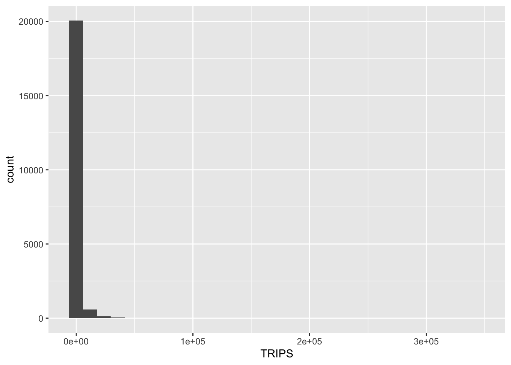

pacman::p_load(tmap, sf, sp, performance, reshape2, ggpubr, tidyverse)10B: Calibrating Spatial Interaction Models with R
In this exercise, we will learn to calibrate Spatial Interaction Models (SIMs) using various regression methods to determine factors affecting public bus passenger flows during the morning peak in Singapore.
1 Exercise 10B Reference
R for Geospatial Data Science and Analytics - 16 Calibrating Spatial Interaction Models with R
2 Overview
In this exercise, we will learn to calibrate Spatial Interaction Models (SIMs) using various regression methods to determine factors affecting public bus passenger flows during the morning peak in Singapore.
Spatial Interaction Models (SIMs) are mathematical models for estimating flows between spatial entities developed by Alan Wilson in the late 1960s and early 1970, with considerable uptake and refinement for transport modelling since then Boyce and Williams (2015).
There are four main types of traditional SIMs (Wilson 1971):
- Unconstrained
- Production-constrained
- Attraction-constrained
- Doubly-constrained
Ordinary least square (OLS), log-normal, Poisson and negative binomial (NB) regression methods have been used extensively to calibrate OD flow models by processing flow data as different types of dependent variables. In this chapter, you will gain hands-on experiences on using appropriate R packages to calibrate SIM by using there four regression methods.
Note
Calibration is the process of adjusting parameters in the model to try and get the estimates to agree with the observed data as much as possible. Adjusting the parameters is the sort of iterative process that computers are particularly good at and the goodness-of-fit statistics can be used to indicate when the optimum solution is found. Historically this process required a researcher with the requisite programming skills to write a computer algorithm to iteratively adjust each parameter, check the goodness-of-fit, and then start all over again until the goodness-of-fit statistic was maximised/minimised. (Adam Dennett, 2018)
3 Learning Outcome
- Understand and apply different types of Spatial Interaction Models (SIMs).
- Calibrate SIMs using Ordinary Least Squares (OLS), log-normal, Poisson, and Negative Binomial (NB) regression methods.
- Import and prepare geospatial data using R packages such as sf and tidyverse.
- Compute a distance matrix for spatial data using the sp package.
- Visualize and compare model performance using ggplot2 and performance packages.
4 The Data
This exercise is a continuation of Hands-on Exercise 10A and the following datasets will be used in this exercise:
| Data Set | Description | Format |
|---|---|---|
| od_data.rds | Weekday morning peak passenger flows at the planning subzone level. | RDS |
| mpsz.rds | URA Master Plan 2019 Planning Subzone boundary in simple feature tibble data frame format. | RDS |
| pop.csv | Additional attribute data file providing population information. | CSV |
These datasets will be utilized to calibrate and visualize the Spatial Interaction Models.
This exercise is a continuation from Hands-on Exercise 9A.
5 Installing and Launching the R Packages
The following R packages will be used in this exercise:
| Package | Purpose | Use Case in Exercise |
|---|---|---|
| sf | Imports, integrates, processes, and transforms vector-based geospatial data. | Handling vector geospatial data, such as the URA Master Plan 2019 Planning Subzone boundary. |
| tidyverse | A collection of packages for data science tasks such as data manipulation, visualization, and modeling. | Importing CSV files, wrangling data, and performing relational joins. |
| tmap | Creates static and interactive thematic maps using cartographic quality elements. | Visualizing regional development indicators and plotting maps showing spatial relationships and patterns. |
| performance | Provides tools to assess and compare the performance of regression models. | Comparing model performance metrics, such as R-squared and RMSE, for different spatial interaction models. |
| sp | Provides functions for spatial dependence analysis, including spatial weights and spatial autocorrelation. | Computing spatial weights and distance matrices for geospatial data. |
| ggplot2 | Creates data visualizations using a layered grammar of graphics. | Plotting histograms, scatter plots, and visualizing model fits and residuals for calibrated Spatial Interaction Models. |
| reshape2 | Provides functions to reshape data between wide and long formats. | Pivoting distance matrices into long format for model calibration and analysis. |
| ggpubr | Provides tools for creating and customizing publication-ready plots in ggplot2. | Combining multiple plots into a single visual for comparing different models. |
To install and load these packages, use the following code:
5.1 Computing Distance Matrix
In spatial interaction, a distance matrix displays the distance between pairs of locations. For example, the Euclidean distance between two locations like MESZ01 and RVSZ05 is 3926.0025, and between MESZ01 and SRSZ01 is 3939.1079. An entry of 0 on the diagonal indicates that the location is compared with itself.
First, import mpsz.rds into R:
mpsz <- read_rds("data/rds/mpsz.rds")
mpszSimple feature collection with 332 features and 6 fields
Geometry type: MULTIPOLYGON
Dimension: XY
Bounding box: xmin: 2667.538 ymin: 15748.72 xmax: 56396.44 ymax: 50256.33
Projected CRS: SVY21 / Singapore TM
First 10 features:
SUBZONE_N SUBZONE_C PLN_AREA_N PLN_AREA_C REGION_N
1 MARINA EAST MESZ01 MARINA EAST ME CENTRAL REGION
2 INSTITUTION HILL RVSZ05 RIVER VALLEY RV CENTRAL REGION
3 ROBERTSON QUAY SRSZ01 SINGAPORE RIVER SR CENTRAL REGION
4 JURONG ISLAND AND BUKOM WISZ01 WESTERN ISLANDS WI WEST REGION
5 FORT CANNING MUSZ02 MUSEUM MU CENTRAL REGION
6 MARINA EAST (MP) MPSZ05 MARINE PARADE MP CENTRAL REGION
7 SUDONG WISZ03 WESTERN ISLANDS WI WEST REGION
8 SEMAKAU WISZ02 WESTERN ISLANDS WI WEST REGION
9 SOUTHERN GROUP SISZ02 SOUTHERN ISLANDS SI CENTRAL REGION
10 SENTOSA SISZ01 SOUTHERN ISLANDS SI CENTRAL REGION
REGION_C geometry
1 CR MULTIPOLYGON (((33222.98 29...
2 CR MULTIPOLYGON (((28481.45 30...
3 CR MULTIPOLYGON (((28087.34 30...
4 WR MULTIPOLYGON (((14557.7 304...
5 CR MULTIPOLYGON (((29542.53 31...
6 CR MULTIPOLYGON (((35279.55 30...
7 WR MULTIPOLYGON (((15772.59 21...
8 WR MULTIPOLYGON (((19843.41 21...
9 CR MULTIPOLYGON (((30870.53 22...
10 CR MULTIPOLYGON (((26879.04 26...Note that it is a sf tibble dataframe object class.
5.2 Converting from sf data.table to SpatialPolygonsDataFrame
There are at least two ways to compute the required distance matrix. One is based on sf and the other is based on sp. Past experience shown that computing distance matrix by using sf function took relatively longer time that sp method especially the data set is large. In view of this, sp method is used in the code chunks below.
First
as.Spatial()
will be used to convert mpsz from sf tibble data frame to
SpatialPolygonsDataFrame of sp object as shown in the code chunk
below.
mpsz_sp <- as(mpsz, "Spatial")
mpsz_spclass : SpatialPolygonsDataFrame
features : 332
extent : 2667.538, 56396.44, 15748.72, 50256.33 (xmin, xmax, ymin, ymax)
crs : +proj=tmerc +lat_0=1.36666666666667 +lon_0=103.833333333333 +k=1 +x_0=28001.642 +y_0=38744.572 +ellps=WGS84 +towgs84=0,0,0,0,0,0,0 +units=m +no_defs
variables : 6
names : SUBZONE_N, SUBZONE_C, PLN_AREA_N, PLN_AREA_C, REGION_N, REGION_C
min values : ADMIRALTY, AMSZ01, ANG MO KIO, AM, CENTRAL REGION, CR
max values : YUNNAN, YSSZ09, YISHUN, YS, WEST REGION, WR 5.3 Computing the Distance Matrix
Now, we compute the Euclidean distance between centroids of
planning subzones using spDists() from the
sp package.
Q&A
Do you know why the distance is calculated between two centroids of a pair of spatial polygons?
Centroids simplify distance calculations by representing each polygon with a single point, avoiding the complexity of measuring distances between all boundary points of irregular shapes
[,1] [,2] [,3] [,4] [,5] [,6] [,7]
[1,] 0.000 3926.0025 3939.108 20252.964 2989.9839 1431.330 19211.836
[2,] 3926.003 0.0000 305.737 16513.865 951.8314 5254.066 16242.523
[3,] 3939.108 305.7370 0.000 16412.062 1045.9088 5299.849 16026.146
[4,] 20252.964 16513.8648 16412.062 0.000 17450.3044 21665.795 7229.017
[5,] 2989.984 951.8314 1045.909 17450.304 0.0000 4303.232 17020.916
[6,] 1431.330 5254.0664 5299.849 21665.795 4303.2323 0.000 20617.082
[7,] 19211.836 16242.5230 16026.146 7229.017 17020.9161 20617.082 0.000
[8,] 14960.942 12749.4101 12477.871 11284.279 13336.0421 16281.453 5606.082
[9,] 7515.256 7934.8082 7649.776 18427.503 7801.6163 8403.896 14810.930
[10,] 6391.342 4975.0021 4669.295 15469.566 5226.8731 7707.091 13111.391
[,8] [,9] [,10]
[1,] 14960.942 7515.256 6391.342
[2,] 12749.410 7934.808 4975.002
[3,] 12477.871 7649.776 4669.295
[4,] 11284.279 18427.503 15469.566
[5,] 13336.042 7801.616 5226.873
[6,] 16281.453 8403.896 7707.091
[7,] 5606.082 14810.930 13111.391
[8,] 0.000 9472.024 8575.490
[9,] 9472.024 0.000 3780.800
[10,] 8575.490 3780.800 0.000The output dist is a matrix without labeled rows and columns for the planning subzone codes.
5.4 Labeling the Distance Matrix
We will label the rows and columns of the distance matrix using the planning subzone codes.
5.5 Pivoting the Distance Matrix
Next, we pivot the distance matrix into a long format, where rows represent the origin and destination pairs.
distPair <- melt(dist) %>%
rename(dist = value)
head(distPair, 10) Var1 Var2 dist
1 MESZ01 MESZ01 0.000
2 RVSZ05 MESZ01 3926.003
3 SRSZ01 MESZ01 3939.108
4 WISZ01 MESZ01 20252.964
5 MUSZ02 MESZ01 2989.984
6 MPSZ05 MESZ01 1431.330
7 WISZ03 MESZ01 19211.836
8 WISZ02 MESZ01 14960.942
9 SISZ02 MESZ01 7515.256
10 SISZ01 MESZ01 6391.342Note
Observations:
The within zone distance is 0.
5.6 Updating Intra-Zonal Distances
In this section, we are going to append a constant value to replace the intra-zonal distance of 0.
We will select and find out the minimum value of the distance by
using
summary().
Var1 Var2 dist
MESZ01 : 331 MESZ01 : 331 Min. : 173.8
RVSZ05 : 331 RVSZ05 : 331 1st Qu.: 7149.5
SRSZ01 : 331 SRSZ01 : 331 Median :11890.0
WISZ01 : 331 WISZ01 : 331 Mean :12229.4
MUSZ02 : 331 MUSZ02 : 331 3rd Qu.:16401.7
MPSZ05 : 331 MPSZ05 : 331 Max. :49894.4
(Other):107906 (Other):107906 Then, we replace intra-zonal distances (which are 0) with a constant value of 50m.
Var1 Var2 dist
MESZ01 : 332 MESZ01 : 332 Min. : 50
RVSZ05 : 332 RVSZ05 : 332 1st Qu.: 7097
SRSZ01 : 332 SRSZ01 : 332 Median :11864
WISZ01 : 332 WISZ01 : 332 Mean :12193
MUSZ02 : 332 MUSZ02 : 332 3rd Qu.:16388
MPSZ05 : 332 MPSZ05 : 332 Max. :49894
(Other):108232 (Other):108232 5.7 Renaming Fields and Saving
Next, qe rename the origin and destination fields for clarity.
distPair <- distPair %>%
rename(orig = Var1, dest = Var2)Finally, save the updated distance pair dataframe for future use.
write_rds(distPair, "data/rds/distPair.rds")
distPair <- read_rds("data/rds/distPair.rds")6 Preparing Flow Data
First, we import the od_data from Hands-on Exercise 9A.
od_data_fii <- read_rds("data/rds/od_data_fii.rds")6.1 Computing Total Passenger Trips
Next, compute the total passenger trips between and within planning subzones.
flow_data <- od_data_fii %>%
group_by(ORIGIN_SZ, DESTIN_SZ) %>%
summarize(TRIPS = sum(MORNING_PEAK))Display the first 10 rows of flow_data:
head(flow_data, 10)6.2 Separating Intra-Zonal Flows
The code below adds two fields to flow_data,
separating intra-zonal trips.
6.3 Combining Passenger Volume and Distance Data
Before we can join flow_data and
distPair, we need to convert data value type of
ORIGIN_SZ and DESTIN_SZ fields of
flow_data dataframe into factor data type.
Then, we can perform left join on flow_data with
distPair to combine passenger volumes with distances.
flow_data1 <- flow_data %>%
left_join(distPair, by = c("ORIGIN_SZ" = "orig", "DESTIN_SZ" = "dest"))7 Preparing Origin and Destination Attributes
In this section, we will prepare the origin and destination attribute data.
7.1 Importing Population Data
pop <- read_csv("data/aspatial/pop.csv")7.2 Geospatial Data Wrangling
Join the population data with mpsz.
pop <- pop %>%
left_join(mpsz, by = c("PA" = "PLN_AREA_N", "SZ" = "SUBZONE_N")) %>%
select(1:6) %>%
rename(SZ_NAME = SZ, SZ = SUBZONE_C)7.3 Adding Origin Attributes
Join population data with flow_data1 for origin
attributes.
7.4 Adding Destination Attributes
Join population data with flow_data1 for destination
attributes.
7.5 Saving Processed Data
The final output will be saved as SIM_data in RDS format.
write_rds(flow_data1, "data/rds/flow_data_6-9.rds")8 Calibrating Spatial Interaction Models
In this section, you will learn how to calibrate Spatial Interaction Models by using Poisson Regression method.
8.1 Importing the Modelling Data
Firstly, we will import the saved modelling data.
SIM_data <- read_rds("data/rds/flow_data_6-9.rds")8.2 Visualizing the Dependent Variable
To visualize the dependent variable, we will plot the distribution
of TRIPS using a histogram.
ggplot(data = SIM_data, aes(x = TRIPS)) +
geom_histogram()
Note
Observations:
Notice that the distribution is highly skewed and not resemble bell shape or also known as normal distribution.
We can also visualize the relationship between
TRIPS and distance using a scatter plot.
ggplot(data = SIM_data, aes(x = dist, y = TRIPS)) +
geom_point() +
geom_smooth(method = lm)
Note
Observations:
the relationship between TRIPS and
distance hardly resemble a linear relationship.
We can perform log-transformation on both variables to make he relationship appears more linear.
8.3 Handling Zero Values in Variables
Since Poisson Regression is based of log and log 0 is undefined, it is important for us to ensure that no 0 values in the explanatory variables.
We will compute the summary statistics of all variables in SIM_data data frame.
summary(SIM_data) ORIGIN_SZ DESTIN_SZ TRIPS FlowNoIntra
Length:20916 Length:20916 Min. : 1 Min. : 0.0
Class :character Class :character 1st Qu.: 17 1st Qu.: 15.0
Mode :character Mode :character Median : 87 Median : 81.0
Mean : 1178 Mean : 980.1
3rd Qu.: 454 3rd Qu.: 417.0
Max. :344039 Max. :218070.0
offset dist ORIGIN_AGE7_12 ORIGIN_AGE13_24
Min. :0.000001 Min. : 50 Min. : 0.0 Min. : 0
1st Qu.:1.000000 1st Qu.: 3373 1st Qu.: 50.0 1st Qu.: 100
Median :1.000000 Median : 6172 Median : 510.0 Median : 1130
Mean :0.986087 Mean : 6992 Mean : 888.6 Mean : 1954
3rd Qu.:1.000000 3rd Qu.: 9918 3rd Qu.:1360.0 3rd Qu.: 3010
Max. :1.000000 Max. :26136 Max. :6340.0 Max. :16380
ORIGIN_AGE25_64 DESTIN_AGE7_12 DESTIN_AGE13_24 DESTIN_AGE25_64
Min. : 0 Min. : 0.0 Min. : 0 Min. : 0
1st Qu.: 730 1st Qu.: 10.0 1st Qu.: 60 1st Qu.: 630
Median : 5730 Median : 510.0 Median : 1100 Median : 5710
Mean : 9092 Mean : 854.6 Mean : 1896 Mean : 8829
3rd Qu.:14180 3rd Qu.:1350.0 3rd Qu.: 2920 3rd Qu.:13830
Max. :74610 Max. :6340.0 Max. :16380 Max. :74610 The print report above reveals that variables ORIGIN_AGE7_12, ORIGIN_AGE13_24, ORIGIN_AGE25_64,DESTIN_AGE7_12, DESTIN_AGE13_24, DESTIN_AGE25_64 consist of 0 values.
SIM_data$DESTIN_AGE7_12 <- ifelse(SIM_data$DESTIN_AGE7_12 == 0, 0.99, SIM_data$DESTIN_AGE7_12)
SIM_data$DESTIN_AGE13_24 <- ifelse(SIM_data$DESTIN_AGE13_24 == 0, 0.99, SIM_data$DESTIN_AGE13_24)
SIM_data$DESTIN_AGE25_64 <- ifelse(SIM_data$DESTIN_AGE25_64 == 0, 0.99, SIM_data$DESTIN_AGE25_64)
SIM_data$ORIGIN_AGE7_12 <- ifelse(SIM_data$ORIGIN_AGE7_12 == 0, 0.99, SIM_data$ORIGIN_AGE7_12)
SIM_data$ORIGIN_AGE13_24 <- ifelse(SIM_data$ORIGIN_AGE13_24 == 0, 0.99, SIM_data$ORIGIN_AGE13_24)
SIM_data$ORIGIN_AGE25_64 <- ifelse(SIM_data$ORIGIN_AGE25_64 == 0, 0.99, SIM_data$ORIGIN_AGE25_64)
summary(SIM_data) ORIGIN_SZ DESTIN_SZ TRIPS FlowNoIntra
Length:20916 Length:20916 Min. : 1 Min. : 0.0
Class :character Class :character 1st Qu.: 17 1st Qu.: 15.0
Mode :character Mode :character Median : 87 Median : 81.0
Mean : 1178 Mean : 980.1
3rd Qu.: 454 3rd Qu.: 417.0
Max. :344039 Max. :218070.0
offset dist ORIGIN_AGE7_12 ORIGIN_AGE13_24
Min. :0.000001 Min. : 50 Min. : 0.99 Min. : 0.99
1st Qu.:1.000000 1st Qu.: 3373 1st Qu.: 50.00 1st Qu.: 100.00
Median :1.000000 Median : 6172 Median : 510.00 Median : 1130.00
Mean :0.986087 Mean : 6992 Mean : 888.77 Mean : 1954.26
3rd Qu.:1.000000 3rd Qu.: 9918 3rd Qu.:1360.00 3rd Qu.: 3010.00
Max. :1.000000 Max. :26136 Max. :6340.00 Max. :16380.00
ORIGIN_AGE25_64 DESTIN_AGE7_12 DESTIN_AGE13_24 DESTIN_AGE25_64
Min. : 0.99 Min. : 0.99 Min. : 0.99 Min. : 0.99
1st Qu.: 730.00 1st Qu.: 10.00 1st Qu.: 60.00 1st Qu.: 630.00
Median : 5730.00 Median : 510.00 Median : 1100.00 Median : 5710.00
Mean : 9092.13 Mean : 854.82 Mean : 1896.17 Mean : 8829.27
3rd Qu.:14180.00 3rd Qu.:1350.00 3rd Qu.: 2920.00 3rd Qu.:13830.00
Max. :74610.00 Max. :6340.00 Max. :16380.00 Max. :74610.00 All the 0 values have been replaced by 0.99.
8.4 Unconstrained Spatial Interaction Model
In this section, we will calibrate an unconstrained spatial
interaction model by using
glm()
of Base Stats.
Note
The general formula of Unconstrained Spatial Interaction Model
\(\lambda_{ij} = \exp \left( k + \mu \ln V_i + \alpha \ln W_j - \beta \ln d_{ij} \right)\)
The explanatory variables are origin population by different age
cohort, destination population by different age cohort
(i.e. ORIGIN_AGE25_64) and distance between
origin and destination in km (i.e. dist). To fit
an unconstrained Spatial Interaction Model using Poisson
regression:
uncSIM <- glm(formula = TRIPS ~ log(ORIGIN_AGE25_64) + log(DESTIN_AGE25_64) + log(dist),
family = poisson(link = "log"),
data = SIM_data,
na.action = na.exclude)
uncSIM
Call: glm(formula = TRIPS ~ log(ORIGIN_AGE25_64) + log(DESTIN_AGE25_64) +
log(dist), family = poisson(link = "log"), data = SIM_data,
na.action = na.exclude)
Coefficients:
(Intercept) log(ORIGIN_AGE25_64) log(DESTIN_AGE25_64)
10.58389 0.26347 0.02567
log(dist)
-0.73018
Degrees of Freedom: 20915 Total (i.e. Null); 20912 Residual
Null Deviance: 105500000
Residual Deviance: 62360000 AIC: 624900008.5 Calculating R-squared for Unconstrained SIM
In order to measure how much variation of the trips can be accounted by the model, we will define a function to calculate R-squared and apply it to the model.
CalcRSquared <- function(observed, estimated){
r <- cor(observed, estimated)
r^2
}Then, we will calculate the R-squared of the unconstrained model.
CalcRSquared(uncSIM$data$TRIPS, uncSIM$fitted.values)[1] 0.1938202Alternatively, we can calculate McFadden’s R-squared.
r2_mcfadden(uncSIM)# R2 for Generalized Linear Regression
R2: 0.408
adj. R2: 0.408Note
McFadden’s R-squared
- Interpretation: McFadden’s R-squared is used for logistic regression models and measures the improvement of the fitted model over the null model. It is not directly comparable to the traditional R-squared.
-
Range: McFadden’s R-squared values
typically range from 0 to just under 1.
- 0: The model is no better than the null model.
- 1: The model perfectly predicts the outcome.
-
Good Range:
- 0.2 to 0.4: Considered good for logistic regression models.
- Above 0.4: Indicates a very strong model.
8.6 Origin (Production) Constrained SIM
In this section, we will fit an origin constrained SIM, where the trips are constrained by the origin.
Note
The general formula of Origin Constrained Spatial Interaction Model
\(\lambda_{ij} = \exp\left( k + \mu_i + \alpha \ln W_j - \beta \ln d_{ij} \right)\)
Notice that the difference between Unconstrained Spatial Interaction Model and this formula lies in the second term. In the Unconstrained Spatial Interaction Model formula, it is \(\mu \ln V_i\) as compared to \(\mu_i\) in Origin Constrained Spatial Interaction Model.
orcSIM <- glm(formula = TRIPS ~ ORIGIN_SZ + log(DESTIN_AGE25_64) + log(dist),
family = poisson(link = "log"),
data = SIM_data,
na.action = na.exclude)
summary(orcSIM)
Call:
glm(formula = TRIPS ~ ORIGIN_SZ + log(DESTIN_AGE25_64) + log(dist),
family = poisson(link = "log"), data = SIM_data, na.action = na.exclude)
Coefficients:
Estimate Std. Error z value Pr(>|z|)
(Intercept) 1.251e+01 3.144e-03 3977.962 < 2e-16 ***
ORIGIN_SZAMSZ02 1.062e+00 3.687e-03 288.178 < 2e-16 ***
ORIGIN_SZAMSZ03 6.217e-01 3.774e-03 164.747 < 2e-16 ***
ORIGIN_SZAMSZ04 -2.100e-02 4.265e-03 -4.924 8.46e-07 ***
ORIGIN_SZAMSZ05 -1.778e-01 4.850e-03 -36.661 < 2e-16 ***
ORIGIN_SZAMSZ06 3.340e-01 4.387e-03 76.126 < 2e-16 ***
ORIGIN_SZAMSZ07 -1.141e+00 7.375e-03 -154.672 < 2e-16 ***
ORIGIN_SZAMSZ08 -8.224e-01 6.804e-03 -120.871 < 2e-16 ***
ORIGIN_SZAMSZ09 2.187e-01 4.538e-03 48.186 < 2e-16 ***
ORIGIN_SZAMSZ10 5.139e-01 3.975e-03 129.304 < 2e-16 ***
ORIGIN_SZAMSZ11 -1.476e+00 8.890e-03 -166.019 < 2e-16 ***
ORIGIN_SZAMSZ12 -1.512e+00 8.974e-03 -168.491 < 2e-16 ***
ORIGIN_SZBDSZ01 1.035e+00 3.647e-03 283.888 < 2e-16 ***
ORIGIN_SZBDSZ02 5.114e-01 4.195e-03 121.896 < 2e-16 ***
ORIGIN_SZBDSZ03 1.013e+00 3.733e-03 271.518 < 2e-16 ***
ORIGIN_SZBDSZ04 1.738e+00 3.265e-03 532.437 < 2e-16 ***
ORIGIN_SZBDSZ05 7.463e-01 3.713e-03 200.998 < 2e-16 ***
ORIGIN_SZBDSZ06 9.612e-01 3.743e-03 256.801 < 2e-16 ***
ORIGIN_SZBDSZ07 -9.204e-01 6.791e-03 -135.530 < 2e-16 ***
ORIGIN_SZBDSZ08 -8.772e-01 6.694e-03 -131.044 < 2e-16 ***
ORIGIN_SZBKSZ01 -2.932e-01 5.277e-03 -55.567 < 2e-16 ***
ORIGIN_SZBKSZ02 4.668e-01 4.229e-03 110.382 < 2e-16 ***
ORIGIN_SZBKSZ03 8.058e-01 3.924e-03 205.345 < 2e-16 ***
ORIGIN_SZBKSZ04 -1.653e-03 4.828e-03 -0.342 0.732
ORIGIN_SZBKSZ05 2.118e-02 4.537e-03 4.669 3.03e-06 ***
ORIGIN_SZBKSZ06 1.408e-01 4.826e-03 29.172 < 2e-16 ***
ORIGIN_SZBKSZ07 8.012e-01 3.674e-03 218.081 < 2e-16 ***
ORIGIN_SZBKSZ08 1.203e-01 4.328e-03 27.805 < 2e-16 ***
ORIGIN_SZBKSZ09 8.939e-02 4.527e-03 19.745 < 2e-16 ***
ORIGIN_SZBLSZ01 -1.359e+00 1.077e-02 -126.206 < 2e-16 ***
ORIGIN_SZBLSZ02 -2.083e+00 1.559e-02 -133.643 < 2e-16 ***
ORIGIN_SZBLSZ03 -3.206e+00 3.300e-02 -97.132 < 2e-16 ***
ORIGIN_SZBLSZ04 -1.772e+00 1.577e-02 -112.360 < 2e-16 ***
ORIGIN_SZBMSZ01 1.833e-01 3.973e-03 46.130 < 2e-16 ***
ORIGIN_SZBMSZ02 -1.192e+00 5.701e-03 -209.042 < 2e-16 ***
ORIGIN_SZBMSZ03 -3.159e-01 4.531e-03 -69.718 < 2e-16 ***
ORIGIN_SZBMSZ04 2.399e-02 4.011e-03 5.980 2.23e-09 ***
ORIGIN_SZBMSZ05 -1.274e+00 6.120e-03 -208.104 < 2e-16 ***
ORIGIN_SZBMSZ06 -1.756e+00 9.559e-03 -183.732 < 2e-16 ***
ORIGIN_SZBMSZ07 -3.696e-01 4.489e-03 -82.352 < 2e-16 ***
ORIGIN_SZBMSZ08 -4.495e-01 4.511e-03 -99.631 < 2e-16 ***
ORIGIN_SZBMSZ09 -1.141e+00 5.807e-03 -196.571 < 2e-16 ***
ORIGIN_SZBMSZ10 -1.193e+00 6.140e-03 -194.266 < 2e-16 ***
ORIGIN_SZBMSZ11 -8.546e-01 5.373e-03 -159.060 < 2e-16 ***
ORIGIN_SZBMSZ12 -1.026e+00 6.975e-03 -147.165 < 2e-16 ***
ORIGIN_SZBMSZ13 -2.195e-02 4.435e-03 -4.948 7.50e-07 ***
ORIGIN_SZBMSZ14 -5.738e-01 5.292e-03 -108.430 < 2e-16 ***
ORIGIN_SZBMSZ15 -3.203e-01 4.798e-03 -66.749 < 2e-16 ***
ORIGIN_SZBMSZ16 -1.296e+00 6.081e-03 -213.135 < 2e-16 ***
ORIGIN_SZBMSZ17 -1.756e+00 9.297e-03 -188.888 < 2e-16 ***
ORIGIN_SZBPSZ01 2.254e-01 4.507e-03 50.006 < 2e-16 ***
ORIGIN_SZBPSZ02 2.384e-01 4.944e-03 48.214 < 2e-16 ***
ORIGIN_SZBPSZ03 5.272e-01 4.549e-03 115.887 < 2e-16 ***
ORIGIN_SZBPSZ04 5.440e-01 4.077e-03 133.420 < 2e-16 ***
ORIGIN_SZBPSZ05 6.051e-01 3.781e-03 160.027 < 2e-16 ***
ORIGIN_SZBPSZ06 -9.856e-01 6.582e-03 -149.746 < 2e-16 ***
ORIGIN_SZBPSZ07 -8.273e-01 6.535e-03 -126.592 < 2e-16 ***
ORIGIN_SZBSSZ01 2.322e-03 4.357e-03 0.533 0.594
ORIGIN_SZBSSZ02 4.265e-01 3.924e-03 108.702 < 2e-16 ***
ORIGIN_SZBSSZ03 3.176e-01 3.876e-03 81.942 < 2e-16 ***
ORIGIN_SZBTSZ01 9.283e-02 4.241e-03 21.890 < 2e-16 ***
ORIGIN_SZBTSZ02 -9.336e-01 6.055e-03 -154.184 < 2e-16 ***
ORIGIN_SZBTSZ03 -8.606e-02 4.554e-03 -18.899 < 2e-16 ***
ORIGIN_SZBTSZ04 -6.871e-01 7.481e-03 -91.845 < 2e-16 ***
ORIGIN_SZBTSZ05 -1.472e+00 8.267e-03 -178.077 < 2e-16 ***
ORIGIN_SZBTSZ06 -6.835e-01 5.683e-03 -120.257 < 2e-16 ***
ORIGIN_SZBTSZ07 -1.856e+00 8.657e-03 -214.406 < 2e-16 ***
ORIGIN_SZBTSZ08 -1.019e+00 6.701e-03 -152.085 < 2e-16 ***
ORIGIN_SZCCSZ01 -1.594e+00 1.065e-02 -149.672 < 2e-16 ***
ORIGIN_SZCHSZ01 -1.120e+00 9.221e-03 -121.456 < 2e-16 ***
ORIGIN_SZCHSZ02 -6.325e-01 6.780e-03 -93.284 < 2e-16 ***
ORIGIN_SZCHSZ03 6.495e-01 4.608e-03 140.937 < 2e-16 ***
ORIGIN_SZCKSZ01 4.387e-01 4.047e-03 108.404 < 2e-16 ***
ORIGIN_SZCKSZ02 9.345e-01 4.067e-03 229.779 < 2e-16 ***
ORIGIN_SZCKSZ03 9.446e-01 3.708e-03 254.769 < 2e-16 ***
ORIGIN_SZCKSZ04 1.385e+00 3.782e-03 366.289 < 2e-16 ***
ORIGIN_SZCKSZ05 1.101e+00 4.378e-03 251.560 < 2e-16 ***
ORIGIN_SZCKSZ06 1.306e+00 4.171e-03 312.991 < 2e-16 ***
ORIGIN_SZCLSZ01 -3.752e-01 5.690e-03 -65.937 < 2e-16 ***
ORIGIN_SZCLSZ02 -1.661e+00 1.055e-02 -157.475 < 2e-16 ***
ORIGIN_SZCLSZ03 -3.461e-01 5.238e-03 -66.071 < 2e-16 ***
ORIGIN_SZCLSZ04 8.445e-01 3.627e-03 232.834 < 2e-16 ***
ORIGIN_SZCLSZ05 -1.645e+00 1.013e-02 -162.395 < 2e-16 ***
ORIGIN_SZCLSZ06 9.372e-01 3.478e-03 269.509 < 2e-16 ***
ORIGIN_SZCLSZ07 -1.060e-01 4.398e-03 -24.110 < 2e-16 ***
ORIGIN_SZCLSZ08 3.363e-01 4.833e-03 69.592 < 2e-16 ***
ORIGIN_SZCLSZ09 -1.714e+00 1.353e-02 -126.689 < 2e-16 ***
ORIGIN_SZDTSZ01 -1.720e+00 7.004e-03 -245.518 < 2e-16 ***
ORIGIN_SZDTSZ02 -1.539e+00 6.422e-03 -239.640 < 2e-16 ***
ORIGIN_SZDTSZ03 -2.810e+00 1.301e-02 -215.941 < 2e-16 ***
ORIGIN_SZDTSZ04 -3.750e+00 9.290e-02 -40.363 < 2e-16 ***
ORIGIN_SZDTSZ05 -3.057e+00 2.143e-02 -142.634 < 2e-16 ***
ORIGIN_SZDTSZ06 -2.975e+00 1.737e-02 -171.216 < 2e-16 ***
ORIGIN_SZDTSZ07 -1.877e+00 1.905e-02 -98.511 < 2e-16 ***
ORIGIN_SZDTSZ08 -2.324e+00 9.698e-03 -239.632 < 2e-16 ***
ORIGIN_SZDTSZ09 -3.034e+00 2.054e-02 -147.746 < 2e-16 ***
ORIGIN_SZDTSZ10 -2.158e+00 1.036e-02 -208.287 < 2e-16 ***
ORIGIN_SZDTSZ11 -2.329e+00 1.070e-02 -217.712 < 2e-16 ***
ORIGIN_SZDTSZ12 -3.593e+00 2.551e-02 -140.861 < 2e-16 ***
ORIGIN_SZDTSZ13 -2.397e+00 1.212e-02 -197.773 < 2e-16 ***
ORIGIN_SZGLSZ01 -1.317e+00 7.123e-03 -184.848 < 2e-16 ***
ORIGIN_SZGLSZ02 2.116e-01 4.067e-03 52.013 < 2e-16 ***
ORIGIN_SZGLSZ03 2.050e-01 4.059e-03 50.498 < 2e-16 ***
ORIGIN_SZGLSZ04 9.827e-01 3.416e-03 287.645 < 2e-16 ***
ORIGIN_SZGLSZ05 6.442e-01 3.624e-03 177.781 < 2e-16 ***
ORIGIN_SZHGSZ01 2.595e-01 3.998e-03 64.896 < 2e-16 ***
ORIGIN_SZHGSZ02 6.162e-01 3.842e-03 160.374 < 2e-16 ***
ORIGIN_SZHGSZ03 2.897e-01 4.204e-03 68.905 < 2e-16 ***
ORIGIN_SZHGSZ04 9.444e-01 3.590e-03 263.071 < 2e-16 ***
ORIGIN_SZHGSZ05 1.265e+00 3.527e-03 358.688 < 2e-16 ***
ORIGIN_SZHGSZ06 1.062e-01 4.281e-03 24.815 < 2e-16 ***
ORIGIN_SZHGSZ07 7.740e-01 3.700e-03 209.178 < 2e-16 ***
ORIGIN_SZHGSZ08 2.462e-01 4.275e-03 57.586 < 2e-16 ***
ORIGIN_SZHGSZ09 -5.094e-01 5.808e-03 -87.708 < 2e-16 ***
ORIGIN_SZHGSZ10 -2.665e+00 3.983e-02 -66.910 < 2e-16 ***
ORIGIN_SZJESZ01 3.998e-01 4.103e-03 97.427 < 2e-16 ***
ORIGIN_SZJESZ02 2.755e-01 4.118e-03 66.890 < 2e-16 ***
ORIGIN_SZJESZ03 2.744e-01 4.341e-03 63.207 < 2e-16 ***
ORIGIN_SZJESZ04 -9.169e-01 7.072e-03 -129.657 < 2e-16 ***
ORIGIN_SZJESZ05 -1.967e+00 1.188e-02 -165.550 < 2e-16 ***
ORIGIN_SZJESZ06 3.359e-01 4.037e-03 83.202 < 2e-16 ***
ORIGIN_SZJESZ07 -1.738e+00 9.337e-03 -186.144 < 2e-16 ***
ORIGIN_SZJESZ08 -5.989e-01 8.299e-03 -72.169 < 2e-16 ***
ORIGIN_SZJESZ09 4.456e-01 4.208e-03 105.910 < 2e-16 ***
ORIGIN_SZJESZ10 -1.968e+00 1.632e-02 -120.552 < 2e-16 ***
ORIGIN_SZJESZ11 -2.124e+00 1.681e-02 -126.318 < 2e-16 ***
ORIGIN_SZJWSZ01 2.286e-01 5.369e-03 42.578 < 2e-16 ***
ORIGIN_SZJWSZ02 8.915e-01 3.789e-03 235.292 < 2e-16 ***
ORIGIN_SZJWSZ03 1.293e+00 3.515e-03 367.960 < 2e-16 ***
ORIGIN_SZJWSZ04 1.351e+00 3.578e-03 377.520 < 2e-16 ***
ORIGIN_SZJWSZ05 -1.267e+00 1.009e-02 -125.555 < 2e-16 ***
ORIGIN_SZJWSZ06 -1.005e+00 8.836e-03 -113.734 < 2e-16 ***
ORIGIN_SZJWSZ07 -2.587e+00 2.233e-02 -115.857 < 2e-16 ***
ORIGIN_SZJWSZ08 1.978e+00 3.429e-03 576.877 < 2e-16 ***
ORIGIN_SZJWSZ09 1.944e+00 3.247e-03 598.514 < 2e-16 ***
ORIGIN_SZKLSZ01 1.947e-01 3.918e-03 49.689 < 2e-16 ***
ORIGIN_SZKLSZ02 -4.677e-01 4.893e-03 -95.577 < 2e-16 ***
ORIGIN_SZKLSZ03 -4.055e-01 4.886e-03 -82.983 < 2e-16 ***
ORIGIN_SZKLSZ04 -1.639e+00 6.977e-03 -234.885 < 2e-16 ***
ORIGIN_SZKLSZ05 -8.975e-01 6.538e-03 -137.284 < 2e-16 ***
ORIGIN_SZKLSZ06 -5.593e-01 4.587e-03 -121.911 < 2e-16 ***
ORIGIN_SZKLSZ07 -9.375e-01 6.042e-03 -155.160 < 2e-16 ***
ORIGIN_SZKLSZ08 -8.039e-01 5.230e-03 -153.703 < 2e-16 ***
ORIGIN_SZKLSZ09 -1.545e+00 6.681e-03 -231.271 < 2e-16 ***
ORIGIN_SZLKSZ01 -2.964e+00 2.862e-02 -103.566 < 2e-16 ***
ORIGIN_SZMDSZ01 -2.428e+00 2.166e-02 -112.061 < 2e-16 ***
ORIGIN_SZMDSZ02 -1.119e+00 9.861e-03 -113.450 < 2e-16 ***
ORIGIN_SZMDSZ03 -1.830e+00 1.316e-02 -138.979 < 2e-16 ***
ORIGIN_SZMPSZ01 -9.639e-01 6.419e-03 -150.164 < 2e-16 ***
ORIGIN_SZMPSZ02 -4.675e-01 5.349e-03 -87.390 < 2e-16 ***
ORIGIN_SZMPSZ03 1.260e-01 4.248e-03 29.670 < 2e-16 ***
ORIGIN_SZMSSZ01 -7.329e+00 2.673e-01 -27.422 < 2e-16 ***
ORIGIN_SZMUSZ01 -1.240e+00 5.753e-03 -215.628 < 2e-16 ***
ORIGIN_SZMUSZ02 -3.100e+00 1.434e-02 -216.222 < 2e-16 ***
ORIGIN_SZMUSZ03 -1.786e+00 6.783e-03 -263.255 < 2e-16 ***
ORIGIN_SZNTSZ01 -2.286e+00 2.415e-02 -94.639 < 2e-16 ***
ORIGIN_SZNTSZ02 -2.401e+00 1.230e-02 -195.268 < 2e-16 ***
ORIGIN_SZNTSZ03 -7.543e-01 5.755e-03 -131.074 < 2e-16 ***
ORIGIN_SZNTSZ05 -3.114e+00 3.721e-02 -83.706 < 2e-16 ***
ORIGIN_SZNTSZ06 -3.415e+00 4.002e-02 -85.338 < 2e-16 ***
ORIGIN_SZNVSZ01 6.885e-01 3.551e-03 193.889 < 2e-16 ***
ORIGIN_SZNVSZ02 -4.131e-01 4.796e-03 -86.147 < 2e-16 ***
ORIGIN_SZNVSZ03 -1.054e+00 5.897e-03 -178.743 < 2e-16 ***
ORIGIN_SZNVSZ04 -1.291e+00 7.055e-03 -182.959 < 2e-16 ***
ORIGIN_SZNVSZ05 -2.522e+00 1.287e-02 -195.929 < 2e-16 ***
ORIGIN_SZORSZ01 -2.858e+00 2.619e-02 -109.108 < 2e-16 ***
ORIGIN_SZORSZ02 -1.160e+00 5.665e-03 -204.808 < 2e-16 ***
ORIGIN_SZORSZ03 -1.632e+00 6.782e-03 -240.706 < 2e-16 ***
ORIGIN_SZOTSZ01 -1.691e+00 7.205e-03 -234.655 < 2e-16 ***
ORIGIN_SZOTSZ02 -1.755e+00 8.076e-03 -217.286 < 2e-16 ***
ORIGIN_SZOTSZ03 -7.979e-01 5.279e-03 -151.147 < 2e-16 ***
ORIGIN_SZOTSZ04 -7.263e-01 8.350e-03 -86.984 < 2e-16 ***
ORIGIN_SZPGSZ01 -6.693e-01 9.124e-03 -73.359 < 2e-16 ***
ORIGIN_SZPGSZ02 -3.145e-01 5.659e-03 -55.571 < 2e-16 ***
ORIGIN_SZPGSZ03 1.146e+00 3.625e-03 315.999 < 2e-16 ***
ORIGIN_SZPGSZ04 1.228e+00 3.627e-03 338.445 < 2e-16 ***
ORIGIN_SZPGSZ05 4.787e-01 4.510e-03 106.145 < 2e-16 ***
ORIGIN_SZPLSZ01 -4.797e-01 7.758e-03 -61.839 < 2e-16 ***
ORIGIN_SZPLSZ02 -1.394e+00 1.121e-02 -124.392 < 2e-16 ***
ORIGIN_SZPLSZ03 -2.963e+00 3.138e-02 -94.406 < 2e-16 ***
ORIGIN_SZPLSZ04 -3.465e+00 3.524e-02 -98.323 < 2e-16 ***
ORIGIN_SZPLSZ05 -2.266e+00 1.760e-02 -128.773 < 2e-16 ***
ORIGIN_SZPNSZ01 1.532e+00 3.821e-03 400.912 < 2e-16 ***
ORIGIN_SZPNSZ02 -5.587e-01 9.699e-03 -57.611 < 2e-16 ***
ORIGIN_SZPNSZ03 -1.975e+00 1.746e-02 -113.152 < 2e-16 ***
ORIGIN_SZPNSZ04 -2.601e+00 2.552e-02 -101.923 < 2e-16 ***
ORIGIN_SZPNSZ05 -1.741e+00 1.729e-02 -100.694 < 2e-16 ***
ORIGIN_SZPRSZ01 -6.841e-01 9.325e-03 -73.364 < 2e-16 ***
ORIGIN_SZPRSZ02 1.110e+00 3.790e-03 292.835 < 2e-16 ***
ORIGIN_SZPRSZ03 8.811e-01 3.786e-03 232.709 < 2e-16 ***
ORIGIN_SZPRSZ04 -2.439e-01 6.099e-03 -39.986 < 2e-16 ***
ORIGIN_SZPRSZ05 1.308e+00 3.625e-03 360.972 < 2e-16 ***
ORIGIN_SZPRSZ06 -4.679e-01 6.803e-03 -68.781 < 2e-16 ***
ORIGIN_SZPRSZ07 -2.530e+00 1.680e-02 -150.629 < 2e-16 ***
ORIGIN_SZPRSZ08 1.336e-01 5.012e-03 26.655 < 2e-16 ***
ORIGIN_SZQTSZ01 -3.690e-01 5.363e-03 -68.812 < 2e-16 ***
ORIGIN_SZQTSZ02 -6.760e-01 5.029e-03 -134.429 < 2e-16 ***
ORIGIN_SZQTSZ03 -2.233e-01 4.569e-03 -48.869 < 2e-16 ***
ORIGIN_SZQTSZ04 -1.136e+00 6.204e-03 -183.037 < 2e-16 ***
ORIGIN_SZQTSZ05 -1.992e-01 4.562e-03 -43.664 < 2e-16 ***
ORIGIN_SZQTSZ06 -5.709e-01 5.252e-03 -108.705 < 2e-16 ***
ORIGIN_SZQTSZ07 -1.532e+00 7.795e-03 -196.606 < 2e-16 ***
ORIGIN_SZQTSZ08 -2.386e-01 4.733e-03 -50.403 < 2e-16 ***
ORIGIN_SZQTSZ09 -5.253e-01 5.308e-03 -98.976 < 2e-16 ***
ORIGIN_SZQTSZ10 -3.837e-01 5.196e-03 -73.846 < 2e-16 ***
ORIGIN_SZQTSZ11 -1.313e+00 7.588e-03 -173.079 < 2e-16 ***
ORIGIN_SZQTSZ12 -6.748e-01 6.337e-03 -106.488 < 2e-16 ***
ORIGIN_SZQTSZ13 -8.076e-02 4.804e-03 -16.811 < 2e-16 ***
ORIGIN_SZQTSZ14 -1.335e+00 7.113e-03 -187.705 < 2e-16 ***
ORIGIN_SZQTSZ15 -7.194e-01 8.216e-03 -87.558 < 2e-16 ***
ORIGIN_SZRCSZ01 -6.379e-01 5.283e-03 -120.740 < 2e-16 ***
ORIGIN_SZRCSZ02 -2.358e+00 1.482e-02 -159.094 < 2e-16 ***
ORIGIN_SZRCSZ03 -1.470e+00 7.322e-03 -200.791 < 2e-16 ***
ORIGIN_SZRCSZ04 -2.219e+00 1.109e-02 -200.111 < 2e-16 ***
ORIGIN_SZRCSZ05 -2.770e+00 1.341e-02 -206.629 < 2e-16 ***
ORIGIN_SZRCSZ06 -4.466e-01 6.935e-03 -64.404 < 2e-16 ***
ORIGIN_SZRCSZ08 -2.558e+00 1.610e-02 -158.880 < 2e-16 ***
ORIGIN_SZRCSZ09 -1.978e+00 1.217e-02 -162.512 < 2e-16 ***
ORIGIN_SZRCSZ10 -1.811e+00 6.993e-03 -259.015 < 2e-16 ***
ORIGIN_SZRVSZ01 -2.814e+00 1.312e-02 -214.462 < 2e-16 ***
ORIGIN_SZRVSZ02 -1.124e+00 6.715e-03 -167.428 < 2e-16 ***
ORIGIN_SZRVSZ03 -1.888e+00 9.780e-03 -193.068 < 2e-16 ***
ORIGIN_SZRVSZ04 -1.973e+00 1.378e-02 -143.142 < 2e-16 ***
ORIGIN_SZRVSZ05 -2.176e+00 1.213e-02 -179.378 < 2e-16 ***
ORIGIN_SZSBSZ01 7.906e-01 4.386e-03 180.258 < 2e-16 ***
ORIGIN_SZSBSZ02 -5.268e-01 6.431e-03 -81.909 < 2e-16 ***
ORIGIN_SZSBSZ03 1.010e+00 3.843e-03 262.897 < 2e-16 ***
ORIGIN_SZSBSZ04 7.772e-01 4.361e-03 178.202 < 2e-16 ***
ORIGIN_SZSBSZ05 -7.765e-02 5.496e-03 -14.128 < 2e-16 ***
ORIGIN_SZSBSZ06 -1.650e+00 1.359e-02 -121.412 < 2e-16 ***
ORIGIN_SZSBSZ07 -7.893e-01 9.127e-03 -86.478 < 2e-16 ***
ORIGIN_SZSBSZ08 -9.503e-01 9.362e-03 -101.512 < 2e-16 ***
ORIGIN_SZSBSZ09 -4.758e-01 7.016e-03 -67.806 < 2e-16 ***
ORIGIN_SZSESZ02 1.165e+00 3.595e-03 323.972 < 2e-16 ***
ORIGIN_SZSESZ03 1.289e+00 3.463e-03 372.373 < 2e-16 ***
ORIGIN_SZSESZ04 1.019e+00 3.931e-03 259.250 < 2e-16 ***
ORIGIN_SZSESZ05 -1.106e-01 4.827e-03 -22.907 < 2e-16 ***
ORIGIN_SZSESZ06 9.972e-01 3.761e-03 265.133 < 2e-16 ***
ORIGIN_SZSESZ07 -2.195e+00 1.404e-02 -156.357 < 2e-16 ***
ORIGIN_SZSGSZ01 -8.301e-01 6.827e-03 -121.592 < 2e-16 ***
ORIGIN_SZSGSZ02 -1.135e+00 8.180e-03 -138.755 < 2e-16 ***
ORIGIN_SZSGSZ03 3.108e-01 4.304e-03 72.220 < 2e-16 ***
ORIGIN_SZSGSZ04 3.315e-01 3.954e-03 83.844 < 2e-16 ***
ORIGIN_SZSGSZ05 -1.574e+00 8.178e-03 -192.514 < 2e-16 ***
ORIGIN_SZSGSZ06 4.707e-01 3.752e-03 125.452 < 2e-16 ***
ORIGIN_SZSGSZ07 -5.168e-01 4.973e-03 -103.909 < 2e-16 ***
ORIGIN_SZSKSZ01 -1.388e-01 6.497e-03 -21.359 < 2e-16 ***
ORIGIN_SZSKSZ02 3.980e-01 4.751e-03 83.770 < 2e-16 ***
ORIGIN_SZSKSZ03 -4.619e-01 6.153e-03 -75.064 < 2e-16 ***
ORIGIN_SZSKSZ04 -2.355e+00 2.132e-02 -110.454 < 2e-16 ***
ORIGIN_SZSKSZ05 -1.229e+00 1.245e-02 -98.702 < 2e-16 ***
ORIGIN_SZSLSZ01 -3.172e+00 2.571e-02 -123.358 < 2e-16 ***
ORIGIN_SZSLSZ04 -3.140e-01 5.780e-03 -54.333 < 2e-16 ***
ORIGIN_SZSRSZ01 -1.508e+00 7.084e-03 -212.819 < 2e-16 ***
ORIGIN_SZSRSZ02 -1.783e+00 7.222e-03 -246.939 < 2e-16 ***
ORIGIN_SZSRSZ03 -2.801e+00 1.514e-02 -184.996 < 2e-16 ***
ORIGIN_SZSVSZ01 -2.798e+00 2.815e-02 -99.409 < 2e-16 ***
ORIGIN_SZTHSZ01 -2.986e+00 4.617e-02 -64.671 < 2e-16 ***
ORIGIN_SZTHSZ03 -1.556e+00 1.269e-02 -122.621 < 2e-16 ***
ORIGIN_SZTHSZ04 -3.011e+00 2.435e-02 -123.655 < 2e-16 ***
ORIGIN_SZTHSZ06 -1.631e+00 1.084e-02 -150.482 < 2e-16 ***
ORIGIN_SZTMSZ01 1.080e+00 4.087e-03 264.249 < 2e-16 ***
ORIGIN_SZTMSZ02 2.226e+00 3.176e-03 700.906 < 2e-16 ***
ORIGIN_SZTMSZ03 1.522e+00 3.389e-03 449.101 < 2e-16 ***
ORIGIN_SZTMSZ04 9.516e-01 3.881e-03 245.213 < 2e-16 ***
ORIGIN_SZTMSZ05 -2.458e-01 6.138e-03 -40.038 < 2e-16 ***
ORIGIN_SZTNSZ01 -1.047e+00 5.897e-03 -177.587 < 2e-16 ***
ORIGIN_SZTNSZ02 -1.015e+00 5.720e-03 -177.473 < 2e-16 ***
ORIGIN_SZTNSZ03 -1.518e+00 7.506e-03 -202.275 < 2e-16 ***
ORIGIN_SZTNSZ04 -6.469e-01 5.491e-03 -117.823 < 2e-16 ***
ORIGIN_SZTPSZ01 -6.208e-01 5.132e-03 -120.979 < 2e-16 ***
ORIGIN_SZTPSZ02 4.640e-01 3.614e-03 128.411 < 2e-16 ***
ORIGIN_SZTPSZ03 -4.501e-01 5.102e-03 -88.218 < 2e-16 ***
ORIGIN_SZTPSZ04 -2.797e-01 4.821e-03 -58.026 < 2e-16 ***
ORIGIN_SZTPSZ05 -2.178e-01 4.987e-03 -43.675 < 2e-16 ***
ORIGIN_SZTPSZ06 2.260e-01 5.019e-03 45.026 < 2e-16 ***
ORIGIN_SZTPSZ07 -1.387e-01 5.015e-03 -27.651 < 2e-16 ***
ORIGIN_SZTPSZ08 -6.925e-01 6.545e-03 -105.811 < 2e-16 ***
ORIGIN_SZTPSZ09 -4.794e-01 5.358e-03 -89.465 < 2e-16 ***
ORIGIN_SZTPSZ10 -3.714e-01 5.362e-03 -69.266 < 2e-16 ***
ORIGIN_SZTPSZ11 2.625e-01 4.218e-03 62.229 < 2e-16 ***
ORIGIN_SZTPSZ12 -4.955e-01 5.288e-03 -93.700 < 2e-16 ***
ORIGIN_SZTSSZ01 -3.428e+00 3.961e-02 -86.524 < 2e-16 ***
ORIGIN_SZTSSZ02 5.153e-01 5.790e-03 89.000 < 2e-16 ***
ORIGIN_SZTSSZ03 5.407e-01 5.827e-03 92.803 < 2e-16 ***
ORIGIN_SZTSSZ04 5.158e-01 6.000e-03 85.964 < 2e-16 ***
ORIGIN_SZTSSZ05 -9.510e-01 1.122e-02 -84.796 < 2e-16 ***
ORIGIN_SZTSSZ06 -1.155e+00 1.360e-02 -84.933 < 2e-16 ***
ORIGIN_SZWCSZ01 3.529e-01 5.612e-03 62.877 < 2e-16 ***
ORIGIN_SZWCSZ02 -2.680e+00 2.497e-02 -107.302 < 2e-16 ***
ORIGIN_SZWCSZ03 -4.218e+00 1.325e-01 -31.839 < 2e-16 ***
ORIGIN_SZWDSZ01 1.430e+00 3.467e-03 412.347 < 2e-16 ***
ORIGIN_SZWDSZ02 1.111e+00 3.926e-03 283.079 < 2e-16 ***
ORIGIN_SZWDSZ03 2.250e+00 3.358e-03 669.831 < 2e-16 ***
ORIGIN_SZWDSZ04 1.192e+00 4.101e-03 290.750 < 2e-16 ***
ORIGIN_SZWDSZ05 6.377e-01 4.136e-03 154.160 < 2e-16 ***
ORIGIN_SZWDSZ06 1.295e+00 3.808e-03 340.102 < 2e-16 ***
ORIGIN_SZWDSZ07 2.689e-01 5.407e-03 49.740 < 2e-16 ***
ORIGIN_SZWDSZ08 -1.872e-01 6.132e-03 -30.533 < 2e-16 ***
ORIGIN_SZWDSZ09 1.826e+00 3.498e-03 521.848 < 2e-16 ***
ORIGIN_SZYSSZ01 -5.305e-02 4.658e-03 -11.389 < 2e-16 ***
ORIGIN_SZYSSZ02 1.003e+00 4.134e-03 242.541 < 2e-16 ***
ORIGIN_SZYSSZ03 1.997e+00 3.458e-03 577.479 < 2e-16 ***
ORIGIN_SZYSSZ04 9.186e-01 3.725e-03 246.606 < 2e-16 ***
ORIGIN_SZYSSZ05 1.984e-01 4.595e-03 43.178 < 2e-16 ***
ORIGIN_SZYSSZ06 -8.206e-01 7.460e-03 -109.992 < 2e-16 ***
ORIGIN_SZYSSZ07 -5.298e-01 7.220e-03 -73.381 < 2e-16 ***
ORIGIN_SZYSSZ08 -1.277e-02 5.142e-03 -2.483 0.013 *
ORIGIN_SZYSSZ09 1.405e+00 3.560e-03 394.739 < 2e-16 ***
log(DESTIN_AGE25_64) 2.458e-02 6.646e-05 369.857 < 2e-16 ***
log(dist) -7.137e-01 1.016e-04 -7023.324 < 2e-16 ***
---
Signif. codes: 0 '***' 0.001 '**' 0.01 '*' 0.05 '.' 0.1 ' ' 1
(Dispersion parameter for poisson family taken to be 1)
Null deviance: 105499054 on 20915 degrees of freedom
Residual deviance: 45982898 on 20605 degrees of freedom
AIC: 46115907
Number of Fisher Scoring iterations: 7Similarly, we can calculate R-squared for the origin-constrained model:
CalcRSquared(orcSIM$data$TRIPS, orcSIM$fitted.values)[1] 0.38474168.7 Destination Constrained
In this section, We will fit a destination-constrained Spatial Interaction Model (SIM).
Note
The general formula of Destination Constrained Spatial Interaction Model
\(\lambda_{ij} = \exp \left( k + \mu \ln V_i + \alpha_i - \beta \ln d_{ij} \right)\)
Notice that the difference between Unconstrained Spatial Interaction Model and this formula lies in the third term. In the Unconstrained Spatial Interaction Model formula, it is \(\alpha \ln W_j\) as compared to \(\alpha_i\) in Destination Constrained Spatial Interaction Model.
decSIM <- glm(formula = TRIPS ~
DESTIN_SZ +
log(ORIGIN_AGE25_64) +
log(dist),
family = poisson(link = "log"),
data = SIM_data,
na.action = na.exclude)
summary(decSIM)
Call:
glm(formula = TRIPS ~ DESTIN_SZ + log(ORIGIN_AGE25_64) + log(dist),
family = poisson(link = "log"), data = SIM_data, na.action = na.exclude)
Coefficients:
Estimate Std. Error z value Pr(>|z|)
(Intercept) 11.1886479 0.0027928 4006.284 < 2e-16 ***
DESTIN_SZAMSZ02 0.2047468 0.0035739 57.290 < 2e-16 ***
DESTIN_SZAMSZ03 0.2696890 0.0034700 77.720 < 2e-16 ***
DESTIN_SZAMSZ04 -0.9029147 0.0051608 -174.956 < 2e-16 ***
DESTIN_SZAMSZ05 -0.9208381 0.0048845 -188.522 < 2e-16 ***
DESTIN_SZAMSZ06 -0.7523009 0.0047388 -158.753 < 2e-16 ***
DESTIN_SZAMSZ07 -1.8644282 0.0085251 -218.699 < 2e-16 ***
DESTIN_SZAMSZ08 -0.9320542 0.0053993 -172.625 < 2e-16 ***
DESTIN_SZAMSZ09 -0.9606544 0.0051384 -186.955 < 2e-16 ***
DESTIN_SZAMSZ10 0.4367176 0.0035636 122.549 < 2e-16 ***
DESTIN_SZAMSZ11 0.1387581 0.0060108 23.085 < 2e-16 ***
DESTIN_SZAMSZ12 -0.0968912 0.0044113 -21.965 < 2e-16 ***
DESTIN_SZBDSZ01 0.5325773 0.0032062 166.106 < 2e-16 ***
DESTIN_SZBDSZ02 -0.1583330 0.0040652 -38.949 < 2e-16 ***
DESTIN_SZBDSZ03 0.0326536 0.0036002 9.070 < 2e-16 ***
DESTIN_SZBDSZ04 1.0265974 0.0029357 349.691 < 2e-16 ***
DESTIN_SZBDSZ05 0.4370921 0.0032622 133.986 < 2e-16 ***
DESTIN_SZBDSZ06 0.1411228 0.0036420 38.749 < 2e-16 ***
DESTIN_SZBDSZ07 -0.8768697 0.0072058 -121.689 < 2e-16 ***
DESTIN_SZBDSZ08 -1.4154555 0.0073628 -192.244 < 2e-16 ***
DESTIN_SZBKSZ01 -1.0792597 0.0053008 -203.605 < 2e-16 ***
DESTIN_SZBKSZ02 -0.1605882 0.0043097 -37.262 < 2e-16 ***
DESTIN_SZBKSZ03 -0.4113294 0.0044445 -92.548 < 2e-16 ***
DESTIN_SZBKSZ04 0.1040345 0.0039514 26.328 < 2e-16 ***
DESTIN_SZBKSZ05 -0.6361868 0.0045293 -140.461 < 2e-16 ***
DESTIN_SZBKSZ06 -0.8459238 0.0050627 -167.089 < 2e-16 ***
DESTIN_SZBKSZ07 0.2936470 0.0033772 86.949 < 2e-16 ***
DESTIN_SZBKSZ08 -1.0336173 0.0057054 -181.166 < 2e-16 ***
DESTIN_SZBKSZ09 -0.1990406 0.0040672 -48.938 < 2e-16 ***
DESTIN_SZBLSZ01 -0.3332097 0.0058008 -57.442 < 2e-16 ***
DESTIN_SZBLSZ02 0.6867036 0.0055489 123.755 < 2e-16 ***
DESTIN_SZBLSZ03 1.5117931 0.0059625 253.551 < 2e-16 ***
DESTIN_SZBLSZ04 0.0399457 0.0108522 3.681 0.000232 ***
DESTIN_SZBMSZ01 -0.1382645 0.0037137 -37.231 < 2e-16 ***
DESTIN_SZBMSZ02 -0.4926028 0.0039199 -125.667 < 2e-16 ***
DESTIN_SZBMSZ03 -0.9056345 0.0047824 -189.366 < 2e-16 ***
DESTIN_SZBMSZ04 -0.5703442 0.0040984 -139.162 < 2e-16 ***
DESTIN_SZBMSZ05 -0.5916186 0.0049394 -119.775 < 2e-16 ***
DESTIN_SZBMSZ06 -1.6992029 0.0083045 -204.612 < 2e-16 ***
DESTIN_SZBMSZ07 -0.1189131 0.0036137 -32.906 < 2e-16 ***
DESTIN_SZBMSZ08 -1.0778761 0.0047721 -225.870 < 2e-16 ***
DESTIN_SZBMSZ09 -2.0275228 0.0075864 -267.257 < 2e-16 ***
DESTIN_SZBMSZ10 -1.5564968 0.0059936 -259.692 < 2e-16 ***
DESTIN_SZBMSZ11 -1.5778427 0.0059658 -264.483 < 2e-16 ***
DESTIN_SZBMSZ12 -1.0550880 0.0061596 -171.292 < 2e-16 ***
DESTIN_SZBMSZ13 -0.2495049 0.0038737 -64.410 < 2e-16 ***
DESTIN_SZBMSZ14 -1.0137466 0.0060702 -167.005 < 2e-16 ***
DESTIN_SZBMSZ15 -1.2476855 0.0056991 -218.927 < 2e-16 ***
DESTIN_SZBMSZ16 -1.6211588 0.0061126 -265.216 < 2e-16 ***
DESTIN_SZBMSZ17 -1.5085672 0.0071513 -210.951 < 2e-16 ***
DESTIN_SZBPSZ01 -0.4821870 0.0044490 -108.381 < 2e-16 ***
DESTIN_SZBPSZ02 -1.4688886 0.0071354 -205.860 < 2e-16 ***
DESTIN_SZBPSZ03 -1.1618519 0.0067027 -173.342 < 2e-16 ***
DESTIN_SZBPSZ04 -0.6445302 0.0049336 -130.641 < 2e-16 ***
DESTIN_SZBPSZ05 0.5220193 0.0032426 160.988 < 2e-16 ***
DESTIN_SZBPSZ06 -0.7705496 0.0060773 -126.790 < 2e-16 ***
DESTIN_SZBPSZ07 -0.5975374 0.0062143 -96.156 < 2e-16 ***
DESTIN_SZBSSZ01 -0.1159850 0.0036849 -31.476 < 2e-16 ***
DESTIN_SZBSSZ02 -0.7414329 0.0043019 -172.349 < 2e-16 ***
DESTIN_SZBSSZ03 0.3124431 0.0031917 97.893 < 2e-16 ***
DESTIN_SZBTSZ01 0.1570827 0.0034455 45.591 < 2e-16 ***
DESTIN_SZBTSZ02 -0.7950768 0.0055915 -142.194 < 2e-16 ***
DESTIN_SZBTSZ03 -0.1947127 0.0040495 -48.083 < 2e-16 ***
DESTIN_SZBTSZ04 -1.6039884 0.0079447 -201.895 < 2e-16 ***
DESTIN_SZBTSZ05 -0.7366517 0.0056153 -131.188 < 2e-16 ***
DESTIN_SZBTSZ06 -0.8638970 0.0050164 -172.216 < 2e-16 ***
DESTIN_SZBTSZ07 -1.9314011 0.0079429 -243.162 < 2e-16 ***
DESTIN_SZBTSZ08 -1.2455761 0.0066997 -185.914 < 2e-16 ***
DESTIN_SZCCSZ01 -0.4157153 0.0052731 -78.838 < 2e-16 ***
DESTIN_SZCHSZ01 -1.0527185 0.0073777 -142.689 < 2e-16 ***
DESTIN_SZCHSZ02 -0.0306697 0.0045975 -6.671 2.54e-11 ***
DESTIN_SZCHSZ03 1.6952057 0.0032057 528.814 < 2e-16 ***
DESTIN_SZCKSZ01 -0.1484317 0.0040290 -36.840 < 2e-16 ***
DESTIN_SZCKSZ02 -0.4018663 0.0044007 -91.319 < 2e-16 ***
DESTIN_SZCKSZ03 0.7189825 0.0032425 221.737 < 2e-16 ***
DESTIN_SZCKSZ04 -0.6740941 0.0051090 -131.943 < 2e-16 ***
DESTIN_SZCKSZ05 -0.3100378 0.0053366 -58.096 < 2e-16 ***
DESTIN_SZCKSZ06 0.7865808 0.0037571 209.361 < 2e-16 ***
DESTIN_SZCLSZ01 0.4766029 0.0038956 122.345 < 2e-16 ***
DESTIN_SZCLSZ02 -2.2614707 0.0109131 -207.225 < 2e-16 ***
DESTIN_SZCLSZ03 -0.9662790 0.0060017 -161.000 < 2e-16 ***
DESTIN_SZCLSZ04 0.1515855 0.0035858 42.274 < 2e-16 ***
DESTIN_SZCLSZ05 -1.2509920 0.0070287 -177.983 < 2e-16 ***
DESTIN_SZCLSZ06 0.2066348 0.0033754 61.218 < 2e-16 ***
DESTIN_SZCLSZ07 -0.5707110 0.0043519 -131.139 < 2e-16 ***
DESTIN_SZCLSZ08 -0.4633052 0.0048981 -94.589 < 2e-16 ***
DESTIN_SZCLSZ09 0.3993821 0.0054058 73.880 < 2e-16 ***
DESTIN_SZDTSZ01 -0.8694081 0.0044649 -194.722 < 2e-16 ***
DESTIN_SZDTSZ02 -0.8521954 0.0043451 -196.127 < 2e-16 ***
DESTIN_SZDTSZ03 -1.0743465 0.0051507 -208.582 < 2e-16 ***
DESTIN_SZDTSZ04 -1.1505259 0.0110647 -103.981 < 2e-16 ***
DESTIN_SZDTSZ05 -1.0093612 0.0085677 -117.810 < 2e-16 ***
DESTIN_SZDTSZ06 -1.1371739 0.0058133 -195.615 < 2e-16 ***
DESTIN_SZDTSZ07 -1.9214590 0.0180651 -106.363 < 2e-16 ***
DESTIN_SZDTSZ08 -0.6971968 0.0042214 -165.156 < 2e-16 ***
DESTIN_SZDTSZ09 -1.5178484 0.0094552 -160.530 < 2e-16 ***
DESTIN_SZDTSZ10 -1.3018755 0.0075368 -172.737 < 2e-16 ***
DESTIN_SZDTSZ11 -0.8241052 0.0044947 -183.351 < 2e-16 ***
DESTIN_SZDTSZ12 -2.4402256 0.0146441 -166.636 < 2e-16 ***
DESTIN_SZDTSZ13 -1.9939705 0.0092374 -215.859 < 2e-16 ***
DESTIN_SZGLSZ01 0.0262850 0.0041498 6.334 2.39e-10 ***
DESTIN_SZGLSZ02 -0.3074574 0.0038496 -79.867 < 2e-16 ***
DESTIN_SZGLSZ03 0.3982838 0.0032437 122.787 < 2e-16 ***
DESTIN_SZGLSZ04 0.3933413 0.0031685 124.141 < 2e-16 ***
DESTIN_SZGLSZ05 0.1442632 0.0033403 43.189 < 2e-16 ***
DESTIN_SZHGSZ01 0.4273977 0.0032226 132.624 < 2e-16 ***
DESTIN_SZHGSZ02 -0.5494812 0.0044023 -124.816 < 2e-16 ***
DESTIN_SZHGSZ03 -1.0856653 0.0052758 -205.781 < 2e-16 ***
DESTIN_SZHGSZ04 -0.2538606 0.0037451 -67.784 < 2e-16 ***
DESTIN_SZHGSZ05 -0.1395323 0.0037621 -37.089 < 2e-16 ***
DESTIN_SZHGSZ06 -0.6632432 0.0044051 -150.564 < 2e-16 ***
DESTIN_SZHGSZ07 0.2923291 0.0033875 86.296 < 2e-16 ***
DESTIN_SZHGSZ08 -0.2730755 0.0039832 -68.557 < 2e-16 ***
DESTIN_SZHGSZ09 0.2735423 0.0041633 65.704 < 2e-16 ***
DESTIN_SZHGSZ10 -3.1736449 0.0284659 -111.489 < 2e-16 ***
DESTIN_SZJESZ01 -0.1053234 0.0041515 -25.370 < 2e-16 ***
DESTIN_SZJESZ02 -0.4383285 0.0042949 -102.057 < 2e-16 ***
DESTIN_SZJESZ03 -0.5711346 0.0046960 -121.621 < 2e-16 ***
DESTIN_SZJESZ04 -0.0238346 0.0048249 -4.940 7.81e-07 ***
DESTIN_SZJESZ05 -0.7798774 0.0074938 -104.070 < 2e-16 ***
DESTIN_SZJESZ06 0.3824640 0.0034475 110.939 < 2e-16 ***
DESTIN_SZJESZ07 -0.8847081 0.0061908 -142.907 < 2e-16 ***
DESTIN_SZJESZ08 -0.5789622 0.0064625 -89.589 < 2e-16 ***
DESTIN_SZJESZ09 -0.4456534 0.0046887 -95.049 < 2e-16 ***
DESTIN_SZJESZ10 0.7168959 0.0061692 116.205 < 2e-16 ***
DESTIN_SZJESZ11 1.0389409 0.0054888 189.285 < 2e-16 ***
DESTIN_SZJWSZ01 -0.3405028 0.0052968 -64.284 < 2e-16 ***
DESTIN_SZJWSZ02 -0.3557479 0.0045025 -79.011 < 2e-16 ***
DESTIN_SZJWSZ03 0.6822220 0.0033463 203.873 < 2e-16 ***
DESTIN_SZJWSZ04 1.0313249 0.0031431 328.118 < 2e-16 ***
DESTIN_SZJWSZ05 -0.1390898 0.0050165 -27.726 < 2e-16 ***
DESTIN_SZJWSZ06 0.4283248 0.0045931 93.255 < 2e-16 ***
DESTIN_SZJWSZ07 -0.8125529 0.0196066 -41.443 < 2e-16 ***
DESTIN_SZJWSZ08 0.4721844 0.0038233 123.502 < 2e-16 ***
DESTIN_SZJWSZ09 1.4834158 0.0028734 516.263 < 2e-16 ***
DESTIN_SZKLSZ01 -0.5939223 0.0040738 -145.792 < 2e-16 ***
DESTIN_SZKLSZ02 -0.7600734 0.0046596 -163.119 < 2e-16 ***
DESTIN_SZKLSZ03 -1.2543810 0.0051402 -244.031 < 2e-16 ***
DESTIN_SZKLSZ04 -1.7311984 0.0066049 -262.109 < 2e-16 ***
DESTIN_SZKLSZ05 -1.1216909 0.0066398 -168.935 < 2e-16 ***
DESTIN_SZKLSZ06 -0.9437123 0.0044840 -210.462 < 2e-16 ***
DESTIN_SZKLSZ07 -1.0592925 0.0050379 -210.265 < 2e-16 ***
DESTIN_SZKLSZ08 -0.1414796 0.0036529 -38.731 < 2e-16 ***
DESTIN_SZKLSZ09 -1.8622768 0.0066005 -282.142 < 2e-16 ***
DESTIN_SZLKSZ01 -1.6806379 0.0192395 -87.353 < 2e-16 ***
DESTIN_SZMDSZ01 -1.2927817 0.0158848 -81.385 < 2e-16 ***
DESTIN_SZMDSZ02 -1.1068976 0.0093181 -118.790 < 2e-16 ***
DESTIN_SZMDSZ03 -2.8169619 0.0208242 -135.274 < 2e-16 ***
DESTIN_SZMPSZ01 -1.2490736 0.0064894 -192.478 < 2e-16 ***
DESTIN_SZMPSZ02 -0.8411939 0.0048205 -174.505 < 2e-16 ***
DESTIN_SZMPSZ03 -0.1963932 0.0039391 -49.858 < 2e-16 ***
DESTIN_SZMSSZ01 -3.7028759 0.0680912 -54.381 < 2e-16 ***
DESTIN_SZMUSZ01 -1.1416953 0.0048741 -234.235 < 2e-16 ***
DESTIN_SZMUSZ02 -1.4043160 0.0069637 -201.663 < 2e-16 ***
DESTIN_SZMUSZ03 -1.1249185 0.0047737 -235.647 < 2e-16 ***
DESTIN_SZNTSZ01 -2.7232365 0.0219075 -124.306 < 2e-16 ***
DESTIN_SZNTSZ02 -2.0281258 0.0087672 -231.332 < 2e-16 ***
DESTIN_SZNTSZ03 -1.1948616 0.0060363 -197.945 < 2e-16 ***
DESTIN_SZNTSZ05 -1.7337767 0.0161951 -107.056 < 2e-16 ***
DESTIN_SZNTSZ06 -3.0002577 0.0278723 -107.643 < 2e-16 ***
DESTIN_SZNVSZ01 -0.2596984 0.0035898 -72.343 < 2e-16 ***
DESTIN_SZNVSZ02 -0.4670565 0.0040847 -114.343 < 2e-16 ***
DESTIN_SZNVSZ03 -0.5798852 0.0043601 -132.998 < 2e-16 ***
DESTIN_SZNVSZ04 -2.0652499 0.0084658 -243.951 < 2e-16 ***
DESTIN_SZNVSZ05 -1.8113949 0.0072668 -249.271 < 2e-16 ***
DESTIN_SZORSZ01 -2.0102988 0.0174760 -115.032 < 2e-16 ***
DESTIN_SZORSZ02 0.0988466 0.0034722 28.468 < 2e-16 ***
DESTIN_SZORSZ03 -0.8997969 0.0047365 -189.970 < 2e-16 ***
DESTIN_SZOTSZ01 -1.5647551 0.0060744 -257.599 < 2e-16 ***
DESTIN_SZOTSZ02 -0.8001690 0.0053202 -150.401 < 2e-16 ***
DESTIN_SZOTSZ03 -1.4925670 0.0057452 -259.793 < 2e-16 ***
DESTIN_SZOTSZ04 -1.5602417 0.0082363 -189.434 < 2e-16 ***
DESTIN_SZPGSZ01 -2.1137374 0.0140083 -150.892 < 2e-16 ***
DESTIN_SZPGSZ02 -0.7896523 0.0053545 -147.475 < 2e-16 ***
DESTIN_SZPGSZ03 0.5822347 0.0032692 178.098 < 2e-16 ***
DESTIN_SZPGSZ04 0.1448694 0.0036782 39.386 < 2e-16 ***
DESTIN_SZPGSZ05 -0.8881741 0.0060384 -147.087 < 2e-16 ***
DESTIN_SZPLSZ01 -0.0795041 0.0058033 -13.700 < 2e-16 ***
DESTIN_SZPLSZ02 -1.1900069 0.0102914 -115.631 < 2e-16 ***
DESTIN_SZPLSZ03 -0.1247849 0.0084378 -14.789 < 2e-16 ***
DESTIN_SZPLSZ04 -0.2719495 0.0081384 -33.416 < 2e-16 ***
DESTIN_SZPLSZ05 -0.6771576 0.0097439 -69.496 < 2e-16 ***
DESTIN_SZPNSZ01 1.1397906 0.0042414 268.733 < 2e-16 ***
DESTIN_SZPNSZ02 1.6933075 0.0055624 304.420 < 2e-16 ***
DESTIN_SZPNSZ03 0.9586915 0.0062893 152.432 < 2e-16 ***
DESTIN_SZPNSZ04 1.7374816 0.0063491 273.659 < 2e-16 ***
DESTIN_SZPNSZ05 0.8918270 0.0092596 96.314 < 2e-16 ***
DESTIN_SZPRSZ01 -0.6266318 0.0060975 -102.768 < 2e-16 ***
DESTIN_SZPRSZ02 -0.0691388 0.0040915 -16.898 < 2e-16 ***
DESTIN_SZPRSZ03 0.7957648 0.0031463 252.920 < 2e-16 ***
DESTIN_SZPRSZ04 -0.7720323 0.0069948 -110.373 < 2e-16 ***
DESTIN_SZPRSZ05 -0.0147428 0.0038961 -3.784 0.000154 ***
DESTIN_SZPRSZ06 0.4832118 0.0041522 116.374 < 2e-16 ***
DESTIN_SZPRSZ07 -1.5779831 0.0103602 -152.313 < 2e-16 ***
DESTIN_SZPRSZ08 -0.8342815 0.0056390 -147.948 < 2e-16 ***
DESTIN_SZQTSZ01 -1.5074560 0.0081347 -185.311 < 2e-16 ***
DESTIN_SZQTSZ02 -1.4974563 0.0059956 -249.759 < 2e-16 ***
DESTIN_SZQTSZ03 -0.8830042 0.0053218 -165.922 < 2e-16 ***
DESTIN_SZQTSZ04 -1.1472088 0.0055287 -207.500 < 2e-16 ***
DESTIN_SZQTSZ05 -0.9139073 0.0048233 -189.476 < 2e-16 ***
DESTIN_SZQTSZ06 -1.1834757 0.0052284 -226.353 < 2e-16 ***
DESTIN_SZQTSZ07 -1.6922635 0.0088214 -191.837 < 2e-16 ***
DESTIN_SZQTSZ08 0.0925004 0.0037722 24.521 < 2e-16 ***
DESTIN_SZQTSZ09 -0.3797599 0.0045808 -82.903 < 2e-16 ***
DESTIN_SZQTSZ10 -0.4079167 0.0042387 -96.235 < 2e-16 ***
DESTIN_SZQTSZ11 0.2574301 0.0040515 63.539 < 2e-16 ***
DESTIN_SZQTSZ12 -0.3365383 0.0051991 -64.730 < 2e-16 ***
DESTIN_SZQTSZ13 0.1248056 0.0039363 31.706 < 2e-16 ***
DESTIN_SZQTSZ14 -0.1509191 0.0044507 -33.909 < 2e-16 ***
DESTIN_SZQTSZ15 0.0690162 0.0054153 12.745 < 2e-16 ***
DESTIN_SZRCSZ01 -1.0906712 0.0051802 -210.548 < 2e-16 ***
DESTIN_SZRCSZ02 -2.2359026 0.0135798 -164.649 < 2e-16 ***
DESTIN_SZRCSZ03 -1.1174100 0.0070391 -158.744 < 2e-16 ***
DESTIN_SZRCSZ04 -2.4568960 0.0102337 -240.080 < 2e-16 ***
DESTIN_SZRCSZ05 -2.3552607 0.0095366 -246.970 < 2e-16 ***
DESTIN_SZRCSZ06 -2.1550501 0.0124313 -173.356 < 2e-16 ***
DESTIN_SZRCSZ08 -2.0841001 0.0102626 -203.077 < 2e-16 ***
DESTIN_SZRCSZ09 -1.5747291 0.0094616 -166.434 < 2e-16 ***
DESTIN_SZRCSZ10 -1.1849003 0.0051385 -230.594 < 2e-16 ***
DESTIN_SZRVSZ01 -2.1529608 0.0085900 -250.637 < 2e-16 ***
DESTIN_SZRVSZ02 -2.4492143 0.0117753 -207.996 < 2e-16 ***
DESTIN_SZRVSZ03 -2.4222717 0.0100597 -240.790 < 2e-16 ***
DESTIN_SZRVSZ04 -1.7371692 0.0114377 -151.881 < 2e-16 ***
DESTIN_SZRVSZ05 -2.0839854 0.0111068 -187.632 < 2e-16 ***
DESTIN_SZSBSZ01 -0.0294186 0.0046753 -6.292 3.13e-10 ***
DESTIN_SZSBSZ02 -0.9958381 0.0062222 -160.046 < 2e-16 ***
DESTIN_SZSBSZ03 0.7158194 0.0034449 207.793 < 2e-16 ***
DESTIN_SZSBSZ04 0.1191755 0.0043864 27.169 < 2e-16 ***
DESTIN_SZSBSZ05 -0.7522878 0.0057118 -131.708 < 2e-16 ***
DESTIN_SZSBSZ06 -2.7324967 0.0215545 -126.771 < 2e-16 ***
DESTIN_SZSBSZ07 -0.7273121 0.0152820 -47.593 < 2e-16 ***
DESTIN_SZSBSZ08 1.5312821 0.0041649 367.666 < 2e-16 ***
DESTIN_SZSBSZ09 0.8296969 0.0041401 200.405 < 2e-16 ***
DESTIN_SZSESZ02 -0.1094068 0.0038531 -28.395 < 2e-16 ***
DESTIN_SZSESZ03 0.7051751 0.0030797 228.975 < 2e-16 ***
DESTIN_SZSESZ04 -0.4959627 0.0043902 -112.970 < 2e-16 ***
DESTIN_SZSESZ05 -0.1095390 0.0037931 -28.879 < 2e-16 ***
DESTIN_SZSESZ06 -0.5019247 0.0047087 -106.594 < 2e-16 ***
DESTIN_SZSESZ07 -2.8784581 0.0198656 -144.897 < 2e-16 ***
DESTIN_SZSGSZ01 -0.4217244 0.0048327 -87.264 < 2e-16 ***
DESTIN_SZSGSZ02 0.0522081 0.0043245 12.073 < 2e-16 ***
DESTIN_SZSGSZ03 -0.3606981 0.0040326 -89.445 < 2e-16 ***
DESTIN_SZSGSZ04 -0.3212470 0.0039814 -80.687 < 2e-16 ***
DESTIN_SZSGSZ05 -1.9946206 0.0072648 -274.558 < 2e-16 ***
DESTIN_SZSGSZ06 0.4334467 0.0031411 137.991 < 2e-16 ***
DESTIN_SZSGSZ07 -0.3911286 0.0040499 -96.577 < 2e-16 ***
DESTIN_SZSISZ01 -0.9199242 0.0131178 -70.128 < 2e-16 ***
DESTIN_SZSKSZ01 -0.0948233 0.0058707 -16.152 < 2e-16 ***
DESTIN_SZSKSZ02 0.7988244 0.0041751 191.329 < 2e-16 ***
DESTIN_SZSKSZ03 0.0431353 0.0049234 8.761 < 2e-16 ***
DESTIN_SZSKSZ04 -0.6283844 0.0124899 -50.311 < 2e-16 ***
DESTIN_SZSKSZ05 0.0853350 0.0093562 9.121 < 2e-16 ***
DESTIN_SZSLSZ01 -0.3676636 0.0065766 -55.905 < 2e-16 ***
DESTIN_SZSLSZ04 -0.4556080 0.0052586 -86.641 < 2e-16 ***
DESTIN_SZSRSZ01 -1.6857168 0.0063800 -264.220 < 2e-16 ***
DESTIN_SZSRSZ02 -1.6369037 0.0074875 -218.618 < 2e-16 ***
DESTIN_SZSRSZ03 -1.5531939 0.0067905 -228.730 < 2e-16 ***
DESTIN_SZSVSZ01 -2.1265870 0.0278669 -76.312 < 2e-16 ***
DESTIN_SZTHSZ01 -2.5637337 0.0281096 -91.205 < 2e-16 ***
DESTIN_SZTHSZ03 -1.5761506 0.0171972 -91.652 < 2e-16 ***
DESTIN_SZTHSZ04 -2.2051773 0.0180679 -122.050 < 2e-16 ***
DESTIN_SZTHSZ06 -1.2196441 0.0115873 -105.257 < 2e-16 ***
DESTIN_SZTMSZ01 0.0307882 0.0042806 7.192 6.36e-13 ***
DESTIN_SZTMSZ02 1.7151835 0.0027605 621.327 < 2e-16 ***
DESTIN_SZTMSZ03 0.7346828 0.0031466 233.481 < 2e-16 ***
DESTIN_SZTMSZ04 0.8505032 0.0032061 265.273 < 2e-16 ***
DESTIN_SZTMSZ05 0.6510306 0.0040091 162.390 < 2e-16 ***
DESTIN_SZTNSZ01 -0.7109821 0.0044663 -159.188 < 2e-16 ***
DESTIN_SZTNSZ02 -1.4620229 0.0058144 -251.447 < 2e-16 ***
DESTIN_SZTNSZ03 -1.4562412 0.0070409 -206.827 < 2e-16 ***
DESTIN_SZTNSZ04 -1.0851666 0.0054825 -197.934 < 2e-16 ***
DESTIN_SZTPSZ01 -0.5817555 0.0045298 -128.429 < 2e-16 ***
DESTIN_SZTPSZ02 0.1808566 0.0031446 57.513 < 2e-16 ***
DESTIN_SZTPSZ03 -0.4988927 0.0045255 -110.240 < 2e-16 ***
DESTIN_SZTPSZ04 -1.5628293 0.0061959 -252.235 < 2e-16 ***
DESTIN_SZTPSZ05 -0.8873261 0.0047840 -185.479 < 2e-16 ***
DESTIN_SZTPSZ06 -0.2876381 0.0053863 -53.402 < 2e-16 ***
DESTIN_SZTPSZ07 -1.7906770 0.0089538 -199.991 < 2e-16 ***
DESTIN_SZTPSZ08 -1.3194188 0.0064723 -203.855 < 2e-16 ***
DESTIN_SZTPSZ09 -0.6211985 0.0049347 -125.883 < 2e-16 ***
DESTIN_SZTPSZ10 -0.6393478 0.0059480 -107.489 < 2e-16 ***
DESTIN_SZTPSZ11 -0.3804245 0.0040839 -93.152 < 2e-16 ***
DESTIN_SZTPSZ12 -0.8566449 0.0050890 -168.331 < 2e-16 ***
DESTIN_SZTSSZ01 -0.6057724 0.0191686 -31.602 < 2e-16 ***
DESTIN_SZTSSZ02 1.0228252 0.0073989 138.240 < 2e-16 ***
DESTIN_SZTSSZ03 1.7210049 0.0054964 313.117 < 2e-16 ***
DESTIN_SZTSSZ04 1.6552387 0.0055719 297.069 < 2e-16 ***
DESTIN_SZTSSZ05 1.8953793 0.0058191 325.717 < 2e-16 ***
DESTIN_SZTSSZ06 0.9420685 0.0094085 100.130 < 2e-16 ***
DESTIN_SZWCSZ01 1.6641119 0.0036267 458.847 < 2e-16 ***
DESTIN_SZWCSZ02 0.1145004 0.0081389 14.068 < 2e-16 ***
DESTIN_SZWCSZ03 -1.2456001 0.0229509 -54.272 < 2e-16 ***
DESTIN_SZWDSZ01 1.6721786 0.0029145 573.752 < 2e-16 ***
DESTIN_SZWDSZ02 -0.2568974 0.0047005 -54.653 < 2e-16 ***
DESTIN_SZWDSZ03 1.2710250 0.0030587 415.540 < 2e-16 ***
DESTIN_SZWDSZ04 0.2153072 0.0044239 48.669 < 2e-16 ***
DESTIN_SZWDSZ05 0.2343907 0.0042605 55.015 < 2e-16 ***
DESTIN_SZWDSZ06 0.5955289 0.0033837 176.001 < 2e-16 ***
DESTIN_SZWDSZ07 1.2712699 0.0042065 302.217 < 2e-16 ***
DESTIN_SZWDSZ08 0.7528739 0.0050831 148.112 < 2e-16 ***
DESTIN_SZWDSZ09 0.7921131 0.0036639 216.196 < 2e-16 ***
DESTIN_SZYSSZ01 1.2635195 0.0031437 401.923 < 2e-16 ***
DESTIN_SZYSSZ02 0.2534000 0.0041190 61.519 < 2e-16 ***
DESTIN_SZYSSZ03 -0.0477465 0.0043261 -11.037 < 2e-16 ***
DESTIN_SZYSSZ04 0.0517178 0.0040947 12.631 < 2e-16 ***
DESTIN_SZYSSZ05 -1.5878543 0.0085780 -185.108 < 2e-16 ***
DESTIN_SZYSSZ06 -1.2417883 0.0064833 -191.535 < 2e-16 ***
DESTIN_SZYSSZ07 -0.8080207 0.0079004 -102.276 < 2e-16 ***
DESTIN_SZYSSZ08 0.7024251 0.0032453 216.443 < 2e-16 ***
DESTIN_SZYSSZ09 0.3893030 0.0033390 116.593 < 2e-16 ***
log(ORIGIN_AGE25_64) 0.2272793 0.0001037 2191.851 < 2e-16 ***
log(dist) -0.7146129 0.0001018 -7020.061 < 2e-16 ***
---
Signif. codes: 0 '***' 0.001 '**' 0.01 '*' 0.05 '.' 0.1 ' ' 1
(Dispersion parameter for poisson family taken to be 1)
Null deviance: 105499054 on 20915 degrees of freedom
Residual deviance: 44679882 on 20604 degrees of freedom
AIC: 44812892
Number of Fisher Scoring iterations: 7Next, we can examine how the constraints hold for destinations this time.
CalcRSquared(decSIM$data$TRIPS, decSIM$fitted.values)[1] 0.4859378.8 Doubly Constrained
In this section, We will fit a doubly constrained SIM.
Note
The general formula of Doubly Constrained Spatial Interaction Model
\(\lambda_{ij} = \exp \left( k + \mu_i + \alpha_i - \beta \ln d_{ij} \right)\)
Notice that the difference between Unconstrained Spatial Interaction Model and this formula lies in the second and third term. Comparing Unconstrained Spatial Interaction Model formula and Doubly Constrained Spatial Interaction Model, it is \(\mu \ln V_i\) compared to \(\mu_i\) and \(\alpha \ln W_j\) compared to \(\alpha_i\) respectively.
dbcSIM <- glm(formula = TRIPS ~
ORIGIN_SZ +
DESTIN_SZ +
log(dist),
family = poisson(link = "log"),
data = SIM_data,
na.action = na.exclude)
summary(dbcSIM)
Call:
glm(formula = TRIPS ~ ORIGIN_SZ + DESTIN_SZ + log(dist), family = poisson(link = "log"),
data = SIM_data, na.action = na.exclude)
Coefficients:
Estimate Std. Error z value Pr(>|z|)
(Intercept) 12.8209944 0.0037017 3463.498 < 2e-16 ***
ORIGIN_SZAMSZ02 1.0211738 0.0037920 269.300 < 2e-16 ***
ORIGIN_SZAMSZ03 0.5918913 0.0038618 153.267 < 2e-16 ***
ORIGIN_SZAMSZ04 0.1495750 0.0043158 34.658 < 2e-16 ***
ORIGIN_SZAMSZ05 0.0342910 0.0049206 6.969 3.20e-12 ***
ORIGIN_SZAMSZ06 0.4990749 0.0044867 111.235 < 2e-16 ***
ORIGIN_SZAMSZ07 -0.7632253 0.0074431 -102.541 < 2e-16 ***
ORIGIN_SZAMSZ08 -0.6370000 0.0069109 -92.174 < 2e-16 ***
ORIGIN_SZAMSZ09 0.4389776 0.0046271 94.871 < 2e-16 ***
ORIGIN_SZAMSZ10 0.4528313 0.0040674 111.331 < 2e-16 ***
ORIGIN_SZAMSZ11 -1.5882086 0.0091196 -174.153 < 2e-16 ***
ORIGIN_SZAMSZ12 -1.6680341 0.0090745 -183.815 < 2e-16 ***
ORIGIN_SZBDSZ01 0.7900065 0.0037852 208.710 < 2e-16 ***
ORIGIN_SZBDSZ02 0.4100908 0.0043348 94.604 < 2e-16 ***
ORIGIN_SZBDSZ03 0.8165741 0.0038527 211.949 < 2e-16 ***
ORIGIN_SZBDSZ04 1.4216001 0.0033859 419.856 < 2e-16 ***
ORIGIN_SZBDSZ05 0.5426736 0.0038342 141.535 < 2e-16 ***
ORIGIN_SZBDSZ06 0.8337532 0.0038916 214.246 < 2e-16 ***
ORIGIN_SZBDSZ07 -0.8141464 0.0070275 -115.852 < 2e-16 ***
ORIGIN_SZBDSZ08 -0.6895439 0.0067720 -101.822 < 2e-16 ***
ORIGIN_SZBKSZ01 -0.1417253 0.0054077 -26.208 < 2e-16 ***
ORIGIN_SZBKSZ02 0.5709571 0.0044624 127.949 < 2e-16 ***
ORIGIN_SZBKSZ03 1.0136255 0.0041269 245.613 < 2e-16 ***
ORIGIN_SZBKSZ04 -0.0550877 0.0050301 -10.952 < 2e-16 ***
ORIGIN_SZBKSZ05 0.1809565 0.0046783 38.680 < 2e-16 ***
ORIGIN_SZBKSZ06 0.3522991 0.0050200 70.179 < 2e-16 ***
ORIGIN_SZBKSZ07 0.8090159 0.0038448 210.417 < 2e-16 ***
ORIGIN_SZBKSZ08 0.3293552 0.0044605 73.839 < 2e-16 ***
ORIGIN_SZBKSZ09 0.1029554 0.0047049 21.883 < 2e-16 ***
ORIGIN_SZBLSZ01 -1.7475447 0.0109717 -159.277 < 2e-16 ***
ORIGIN_SZBLSZ02 -2.8734452 0.0158781 -180.969 < 2e-16 ***
ORIGIN_SZBLSZ03 -5.0152771 0.0334310 -150.019 < 2e-16 ***
ORIGIN_SZBLSZ04 -2.2662350 0.0166319 -136.258 < 2e-16 ***
ORIGIN_SZBMSZ01 0.2535848 0.0040863 62.058 < 2e-16 ***
ORIGIN_SZBMSZ02 -1.0064943 0.0057776 -174.207 < 2e-16 ***
ORIGIN_SZBMSZ03 -0.0690787 0.0046447 -14.872 < 2e-16 ***
ORIGIN_SZBMSZ04 0.3074282 0.0041340 74.365 < 2e-16 ***
ORIGIN_SZBMSZ05 -1.0255742 0.0062091 -165.172 < 2e-16 ***
ORIGIN_SZBMSZ06 -1.2327549 0.0097168 -126.869 < 2e-16 ***
ORIGIN_SZBMSZ07 -0.2831713 0.0046087 -61.443 < 2e-16 ***
ORIGIN_SZBMSZ08 -0.1874351 0.0046013 -40.736 < 2e-16 ***
ORIGIN_SZBMSZ09 -0.7228122 0.0058864 -122.793 < 2e-16 ***
ORIGIN_SZBMSZ10 -0.8077952 0.0062270 -129.725 < 2e-16 ***
ORIGIN_SZBMSZ11 -0.4924012 0.0054629 -90.136 < 2e-16 ***
ORIGIN_SZBMSZ12 -0.6909135 0.0072100 -95.827 < 2e-16 ***
ORIGIN_SZBMSZ13 0.0512890 0.0045905 11.173 < 2e-16 ***
ORIGIN_SZBMSZ14 -0.2568311 0.0054867 -46.810 < 2e-16 ***
ORIGIN_SZBMSZ15 0.0870108 0.0049432 17.602 < 2e-16 ***
ORIGIN_SZBMSZ16 -0.9610030 0.0061491 -156.284 < 2e-16 ***
ORIGIN_SZBMSZ17 -1.4357633 0.0093761 -153.131 < 2e-16 ***
ORIGIN_SZBPSZ01 0.5477033 0.0046878 116.836 < 2e-16 ***
ORIGIN_SZBPSZ02 0.8280377 0.0051841 159.727 < 2e-16 ***
ORIGIN_SZBPSZ03 1.1025706 0.0048263 228.452 < 2e-16 ***
ORIGIN_SZBPSZ04 0.7644581 0.0042529 179.748 < 2e-16 ***
ORIGIN_SZBPSZ05 0.5761734 0.0039555 145.663 < 2e-16 ***
ORIGIN_SZBPSZ06 -0.8038843 0.0067269 -119.503 < 2e-16 ***
ORIGIN_SZBPSZ07 -0.7081274 0.0067298 -105.223 < 2e-16 ***
ORIGIN_SZBSSZ01 0.0623814 0.0044582 13.993 < 2e-16 ***
ORIGIN_SZBSSZ02 0.5536861 0.0039874 138.858 < 2e-16 ***
ORIGIN_SZBSSZ03 0.2359262 0.0039552 59.649 < 2e-16 ***
ORIGIN_SZBTSZ01 0.0704870 0.0043712 16.125 < 2e-16 ***
ORIGIN_SZBTSZ02 -0.7549336 0.0061482 -122.789 < 2e-16 ***
ORIGIN_SZBTSZ03 -0.0350744 0.0047023 -7.459 8.72e-14 ***
ORIGIN_SZBTSZ04 -0.2858571 0.0078090 -36.606 < 2e-16 ***
ORIGIN_SZBTSZ05 -1.3311102 0.0083964 -158.534 < 2e-16 ***
ORIGIN_SZBTSZ06 -0.5039784 0.0057973 -86.934 < 2e-16 ***
ORIGIN_SZBTSZ07 -1.5400199 0.0087117 -176.777 < 2e-16 ***
ORIGIN_SZBTSZ08 -0.7887679 0.0068453 -115.227 < 2e-16 ***
ORIGIN_SZCCSZ01 -1.5745039 0.0108105 -145.646 < 2e-16 ***
ORIGIN_SZCHSZ01 -1.1361530 0.0093612 -121.369 < 2e-16 ***
ORIGIN_SZCHSZ02 -0.9128000 0.0069668 -131.022 < 2e-16 ***
ORIGIN_SZCHSZ03 -0.4472993 0.0049038 -91.215 < 2e-16 ***
ORIGIN_SZCKSZ01 0.5127473 0.0042287 121.254 < 2e-16 ***
ORIGIN_SZCKSZ02 1.2022570 0.0043552 276.053 < 2e-16 ***
ORIGIN_SZCKSZ03 0.8860008 0.0039444 224.624 < 2e-16 ***
ORIGIN_SZCKSZ04 1.8272911 0.0041197 443.546 < 2e-16 ***
ORIGIN_SZCKSZ05 1.5316688 0.0051392 298.034 < 2e-16 ***
ORIGIN_SZCKSZ06 1.1564174 0.0054508 212.157 < 2e-16 ***
ORIGIN_SZCLSZ01 -0.6010696 0.0058966 -101.936 < 2e-16 ***
ORIGIN_SZCLSZ02 -1.3058599 0.0106228 -122.929 < 2e-16 ***
ORIGIN_SZCLSZ03 -0.1976445 0.0053882 -36.681 < 2e-16 ***
ORIGIN_SZCLSZ04 0.8670957 0.0037702 229.989 < 2e-16 ***
ORIGIN_SZCLSZ05 -1.4675258 0.0102663 -142.946 < 2e-16 ***
ORIGIN_SZCLSZ06 0.9061705 0.0036171 250.525 < 2e-16 ***
ORIGIN_SZCLSZ07 -0.0547981 0.0045274 -12.104 < 2e-16 ***
ORIGIN_SZCLSZ08 0.2882434 0.0051775 55.672 < 2e-16 ***
ORIGIN_SZCLSZ09 -2.2592927 0.0139890 -161.505 < 2e-16 ***
ORIGIN_SZDTSZ01 -1.3547208 0.0070619 -191.836 < 2e-16 ***
ORIGIN_SZDTSZ02 -1.2364916 0.0064723 -191.043 < 2e-16 ***
ORIGIN_SZDTSZ03 -2.5347494 0.0130438 -194.326 < 2e-16 ***
ORIGIN_SZDTSZ04 -3.4173562 0.0929323 -36.773 < 2e-16 ***
ORIGIN_SZDTSZ05 -2.8339289 0.0214468 -132.138 < 2e-16 ***
ORIGIN_SZDTSZ06 -2.8287483 0.0173910 -162.656 < 2e-16 ***
ORIGIN_SZDTSZ07 -1.4138308 0.0191288 -73.911 < 2e-16 ***
ORIGIN_SZDTSZ08 -2.0630511 0.0097602 -211.373 < 2e-16 ***
ORIGIN_SZDTSZ09 -2.6480874 0.0206165 -128.445 < 2e-16 ***
ORIGIN_SZDTSZ10 -1.8351696 0.0104263 -176.013 < 2e-16 ***
ORIGIN_SZDTSZ11 -1.9555077 0.0108002 -181.061 < 2e-16 ***
ORIGIN_SZDTSZ12 -3.1193610 0.0255389 -122.141 < 2e-16 ***
ORIGIN_SZDTSZ13 -2.0406987 0.0121657 -167.742 < 2e-16 ***
ORIGIN_SZGLSZ01 -1.3805437 0.0072209 -191.187 < 2e-16 ***
ORIGIN_SZGLSZ02 0.2358565 0.0041565 56.744 < 2e-16 ***
ORIGIN_SZGLSZ03 0.0341089 0.0041526 8.214 < 2e-16 ***
ORIGIN_SZGLSZ04 0.9786034 0.0035154 278.375 < 2e-16 ***
ORIGIN_SZGLSZ05 0.5811863 0.0037114 156.594 < 2e-16 ***
ORIGIN_SZHGSZ01 0.1686665 0.0040881 41.258 < 2e-16 ***
ORIGIN_SZHGSZ02 0.6787539 0.0039351 172.488 < 2e-16 ***
ORIGIN_SZHGSZ03 0.4547294 0.0042831 106.169 < 2e-16 ***
ORIGIN_SZHGSZ04 0.9678527 0.0036761 263.282 < 2e-16 ***
ORIGIN_SZHGSZ05 1.2917000 0.0036294 355.904 < 2e-16 ***
ORIGIN_SZHGSZ06 0.2142855 0.0043515 49.244 < 2e-16 ***
ORIGIN_SZHGSZ07 0.6701110 0.0037993 176.380 < 2e-16 ***
ORIGIN_SZHGSZ08 0.1562024 0.0043722 35.726 < 2e-16 ***
ORIGIN_SZHGSZ09 -0.7232166 0.0059862 -120.814 < 2e-16 ***
ORIGIN_SZHGSZ10 -3.1262897 0.0398756 -78.401 < 2e-16 ***
ORIGIN_SZJESZ01 0.4508052 0.0043040 104.741 < 2e-16 ***
ORIGIN_SZJESZ02 0.3712710 0.0042775 86.796 < 2e-16 ***
ORIGIN_SZJESZ03 0.3805622 0.0045067 84.443 < 2e-16 ***
ORIGIN_SZJESZ04 -1.0165889 0.0072792 -139.656 < 2e-16 ***
ORIGIN_SZJESZ05 -1.8580763 0.0120151 -154.645 < 2e-16 ***
ORIGIN_SZJESZ06 0.2384917 0.0042026 56.749 < 2e-16 ***
ORIGIN_SZJESZ07 -1.6783671 0.0094270 -178.039 < 2e-16 ***
ORIGIN_SZJESZ08 -0.6513621 0.0086221 -75.545 < 2e-16 ***
ORIGIN_SZJESZ09 0.4198064 0.0044417 94.515 < 2e-16 ***
ORIGIN_SZJESZ10 -2.7745302 0.0169190 -163.989 < 2e-16 ***
ORIGIN_SZJESZ11 -3.2086375 0.0173519 -184.916 < 2e-16 ***
ORIGIN_SZJWSZ01 0.4595116 0.0057545 79.852 < 2e-16 ***
ORIGIN_SZJWSZ02 0.9856003 0.0039792 247.690 < 2e-16 ***
ORIGIN_SZJWSZ03 1.1845095 0.0037710 314.110 < 2e-16 ***
ORIGIN_SZJWSZ04 0.9343282 0.0038871 240.367 < 2e-16 ***
ORIGIN_SZJWSZ05 -1.5766208 0.0102768 -153.416 < 2e-16 ***
ORIGIN_SZJWSZ06 -1.2683438 0.0090746 -139.769 < 2e-16 ***
ORIGIN_SZJWSZ07 -2.2397234 0.0229427 -97.623 < 2e-16 ***
ORIGIN_SZJWSZ08 1.9992609 0.0037950 526.820 < 2e-16 ***
ORIGIN_SZJWSZ09 1.4974956 0.0035176 425.719 < 2e-16 ***
ORIGIN_SZKLSZ01 0.3247754 0.0040006 81.181 < 2e-16 ***
ORIGIN_SZKLSZ02 -0.3400447 0.0049775 -68.317 < 2e-16 ***
ORIGIN_SZKLSZ03 -0.2580403 0.0049578 -52.048 < 2e-16 ***
ORIGIN_SZKLSZ04 -1.2415420 0.0070255 -176.720 < 2e-16 ***
ORIGIN_SZKLSZ05 -0.5469651 0.0066950 -81.698 < 2e-16 ***
ORIGIN_SZKLSZ06 -0.2888779 0.0046575 -62.024 < 2e-16 ***
ORIGIN_SZKLSZ07 -0.6642053 0.0061209 -108.514 < 2e-16 ***
ORIGIN_SZKLSZ08 -0.7044480 0.0053085 -132.701 < 2e-16 ***
ORIGIN_SZKLSZ09 -1.2073066 0.0067273 -179.465 < 2e-16 ***
ORIGIN_SZLKSZ01 -2.3832693 0.0290465 -82.050 < 2e-16 ***
ORIGIN_SZMDSZ01 -1.6623583 0.0228095 -72.880 < 2e-16 ***
ORIGIN_SZMDSZ02 -1.0894780 0.0101251 -107.601 < 2e-16 ***
ORIGIN_SZMDSZ03 -1.5576626 0.0133799 -116.418 < 2e-16 ***
ORIGIN_SZMPSZ01 -0.8193562 0.0065154 -125.757 < 2e-16 ***
ORIGIN_SZMPSZ02 -0.4499772 0.0054364 -82.771 < 2e-16 ***
ORIGIN_SZMPSZ03 0.1072985 0.0043578 24.622 < 2e-16 ***
ORIGIN_SZMSSZ01 -6.6161570 0.2716550 -24.355 < 2e-16 ***
ORIGIN_SZMUSZ01 -0.9145758 0.0058126 -157.344 < 2e-16 ***
ORIGIN_SZMUSZ02 -2.6469649 0.0143884 -183.965 < 2e-16 ***
ORIGIN_SZMUSZ03 -1.4817336 0.0068290 -216.977 < 2e-16 ***
ORIGIN_SZNTSZ01 -2.2277160 0.0241686 -92.174 < 2e-16 ***
ORIGIN_SZNTSZ02 -2.0111227 0.0123512 -162.828 < 2e-16 ***
ORIGIN_SZNTSZ03 -0.4524949 0.0058585 -77.238 < 2e-16 ***
ORIGIN_SZNTSZ05 -2.7479537 0.0372348 -73.801 < 2e-16 ***
ORIGIN_SZNTSZ06 -2.9645842 0.0400589 -74.006 < 2e-16 ***
ORIGIN_SZNVSZ01 0.8704060 0.0036475 238.629 < 2e-16 ***
ORIGIN_SZNVSZ02 -0.2594842 0.0048904 -53.060 < 2e-16 ***
ORIGIN_SZNVSZ03 -0.9402480 0.0059727 -157.425 < 2e-16 ***
ORIGIN_SZNVSZ04 -1.0520174 0.0071039 -148.090 < 2e-16 ***
ORIGIN_SZNVSZ05 -2.2991493 0.0129008 -178.217 < 2e-16 ***
ORIGIN_SZORSZ01 -2.5474177 0.0262225 -97.146 < 2e-16 ***
ORIGIN_SZORSZ02 -1.0318529 0.0057495 -179.468 < 2e-16 ***
ORIGIN_SZORSZ03 -1.3389968 0.0068438 -195.652 < 2e-16 ***
ORIGIN_SZOTSZ01 -1.3085717 0.0072750 -179.873 < 2e-16 ***
ORIGIN_SZOTSZ02 -1.5045539 0.0081728 -184.092 < 2e-16 ***
ORIGIN_SZOTSZ03 -0.4288554 0.0053691 -79.875 < 2e-16 ***
ORIGIN_SZOTSZ04 -0.5091409 0.0084280 -60.411 < 2e-16 ***
ORIGIN_SZPGSZ01 0.6909111 0.0106331 64.978 < 2e-16 ***
ORIGIN_SZPGSZ02 -0.2397081 0.0057837 -41.446 < 2e-16 ***
ORIGIN_SZPGSZ03 0.9957099 0.0037730 263.907 < 2e-16 ***
ORIGIN_SZPGSZ04 1.1597337 0.0037624 308.241 < 2e-16 ***
ORIGIN_SZPGSZ05 0.6492546 0.0046923 138.366 < 2e-16 ***
ORIGIN_SZPLSZ01 -0.5839333 0.0081061 -72.036 < 2e-16 ***
ORIGIN_SZPLSZ02 -1.1064599 0.0114132 -96.946 < 2e-16 ***
ORIGIN_SZPLSZ03 -3.2526684 0.0320369 -101.529 < 2e-16 ***
ORIGIN_SZPLSZ04 -3.7343048 0.0355944 -104.913 < 2e-16 ***
ORIGIN_SZPLSZ05 -2.2665620 0.0179181 -126.496 < 2e-16 ***
ORIGIN_SZPNSZ01 1.0212905 0.0047143 216.637 < 2e-16 ***
ORIGIN_SZPNSZ02 -1.7538504 0.0111979 -156.623 < 2e-16 ***
ORIGIN_SZPNSZ03 -2.7059069 0.0179400 -150.831 < 2e-16 ***
ORIGIN_SZPNSZ04 -4.6167880 0.0263377 -175.292 < 2e-16 ***
ORIGIN_SZPNSZ05 -3.0427726 0.0196666 -154.718 < 2e-16 ***
ORIGIN_SZPRSZ01 -0.6289953 0.0096046 -65.489 < 2e-16 ***
ORIGIN_SZPRSZ02 1.0206156 0.0039549 258.062 < 2e-16 ***
ORIGIN_SZPRSZ03 0.4912065 0.0039421 124.606 < 2e-16 ***
ORIGIN_SZPRSZ04 -0.4025880 0.0064054 -62.852 < 2e-16 ***
ORIGIN_SZPRSZ05 1.1225721 0.0037798 296.996 < 2e-16 ***
ORIGIN_SZPRSZ06 -0.9516629 0.0070083 -135.791 < 2e-16 ***
ORIGIN_SZPRSZ07 -2.5610511 0.0169070 -151.478 < 2e-16 ***
ORIGIN_SZPRSZ08 0.0236310 0.0051603 4.579 4.66e-06 ***
ORIGIN_SZQTSZ01 0.1179359 0.0055302 21.326 < 2e-16 ***
ORIGIN_SZQTSZ02 -0.4078722 0.0051104 -79.812 < 2e-16 ***
ORIGIN_SZQTSZ03 0.1193841 0.0047115 25.339 < 2e-16 ***
ORIGIN_SZQTSZ04 -0.9691910 0.0062944 -153.978 < 2e-16 ***
ORIGIN_SZQTSZ05 0.0998289 0.0046955 21.260 < 2e-16 ***
ORIGIN_SZQTSZ06 -0.2814267 0.0053649 -52.457 < 2e-16 ***
ORIGIN_SZQTSZ07 -1.2548647 0.0078707 -159.436 < 2e-16 ***
ORIGIN_SZQTSZ08 -0.2531659 0.0048952 -51.717 < 2e-16 ***
ORIGIN_SZQTSZ09 -0.4447711 0.0054252 -81.983 < 2e-16 ***
ORIGIN_SZQTSZ10 -0.3430013 0.0053350 -64.293 < 2e-16 ***
ORIGIN_SZQTSZ11 -1.4903190 0.0077334 -192.711 < 2e-16 ***
ORIGIN_SZQTSZ12 -0.6577501 0.0065839 -99.903 < 2e-16 ***
ORIGIN_SZQTSZ13 -0.2096789 0.0050085 -41.864 < 2e-16 ***
ORIGIN_SZQTSZ14 -1.3328463 0.0072466 -183.926 < 2e-16 ***
ORIGIN_SZQTSZ15 -1.0923358 0.0087615 -124.675 < 2e-16 ***
ORIGIN_SZRCSZ01 -0.3755902 0.0053737 -69.894 < 2e-16 ***
ORIGIN_SZRCSZ02 -2.0022955 0.0148554 -134.786 < 2e-16 ***
ORIGIN_SZRCSZ03 -0.9294765 0.0074480 -124.795 < 2e-16 ***
ORIGIN_SZRCSZ04 -2.0113020 0.0111150 -180.953 < 2e-16 ***
ORIGIN_SZRCSZ05 -2.2815677 0.0134388 -169.775 < 2e-16 ***
ORIGIN_SZRCSZ06 -0.1380185 0.0069989 -19.720 < 2e-16 ***
ORIGIN_SZRCSZ08 -2.2838985 0.0161757 -141.193 < 2e-16 ***
ORIGIN_SZRCSZ09 -1.6700447 0.0122155 -136.715 < 2e-16 ***
ORIGIN_SZRCSZ10 -1.4653375 0.0070450 -207.996 < 2e-16 ***
ORIGIN_SZRVSZ01 -2.4788050 0.0131632 -188.313 < 2e-16 ***
ORIGIN_SZRVSZ02 -0.5963401 0.0068203 -87.436 < 2e-16 ***
ORIGIN_SZRVSZ03 -1.3147500 0.0098596 -133.347 < 2e-16 ***
ORIGIN_SZRVSZ04 -1.5215037 0.0138329 -109.992 < 2e-16 ***
ORIGIN_SZRVSZ05 -1.6049655 0.0123359 -130.105 < 2e-16 ***
ORIGIN_SZSBSZ01 0.8915036 0.0049554 179.906 < 2e-16 ***
ORIGIN_SZSBSZ02 -0.5941713 0.0065942 -90.106 < 2e-16 ***
ORIGIN_SZSBSZ03 0.5697082 0.0041613 136.905 < 2e-16 ***
ORIGIN_SZSBSZ04 0.3844219 0.0047855 80.331 < 2e-16 ***
ORIGIN_SZSBSZ05 -0.0485925 0.0057352 -8.473 < 2e-16 ***
ORIGIN_SZSBSZ06 -0.9922846 0.0139889 -70.934 < 2e-16 ***
ORIGIN_SZSBSZ07 -0.1042518 0.0098005 -10.637 < 2e-16 ***
ORIGIN_SZSBSZ08 -1.9893851 0.0098004 -202.991 < 2e-16 ***
ORIGIN_SZSBSZ09 -1.1240957 0.0073195 -153.576 < 2e-16 ***
ORIGIN_SZSESZ02 1.2134372 0.0036997 327.981 < 2e-16 ***
ORIGIN_SZSESZ03 1.1004236 0.0035731 307.971 < 2e-16 ***
ORIGIN_SZSESZ04 1.1489236 0.0040956 280.526 < 2e-16 ***
ORIGIN_SZSESZ05 -0.1461118 0.0049210 -29.691 < 2e-16 ***
ORIGIN_SZSESZ06 1.1678137 0.0038786 301.090 < 2e-16 ***
ORIGIN_SZSESZ07 -1.9241440 0.0140591 -136.861 < 2e-16 ***
ORIGIN_SZSGSZ01 -0.7959607 0.0069928 -113.826 < 2e-16 ***
ORIGIN_SZSGSZ02 -1.2359549 0.0082778 -149.310 < 2e-16 ***
ORIGIN_SZSGSZ03 0.3282470 0.0043939 74.705 < 2e-16 ***
ORIGIN_SZSGSZ04 0.4006316 0.0040311 99.384 < 2e-16 ***
ORIGIN_SZSGSZ05 -1.4296109 0.0082085 -174.163 < 2e-16 ***
ORIGIN_SZSGSZ06 0.3863254 0.0038318 100.822 < 2e-16 ***
ORIGIN_SZSGSZ07 -0.4469943 0.0050392 -88.703 < 2e-16 ***
ORIGIN_SZSKSZ01 -0.1580149 0.0069175 -22.843 < 2e-16 ***
ORIGIN_SZSKSZ02 0.1537997 0.0052382 29.361 < 2e-16 ***
ORIGIN_SZSKSZ03 -0.4326739 0.0063779 -67.840 < 2e-16 ***
ORIGIN_SZSKSZ04 -2.0322053 0.0227241 -89.430 < 2e-16 ***
ORIGIN_SZSKSZ05 -1.1835613 0.0147778 -80.091 < 2e-16 ***
ORIGIN_SZSLSZ01 -2.9837421 0.0258339 -115.497 < 2e-16 ***
ORIGIN_SZSLSZ04 -0.2992181 0.0058854 -50.841 < 2e-16 ***
ORIGIN_SZSRSZ01 -1.0561834 0.0071740 -147.223 < 2e-16 ***
ORIGIN_SZSRSZ02 -1.4438175 0.0072835 -198.231 < 2e-16 ***
ORIGIN_SZSRSZ03 -2.3619347 0.0152284 -155.101 < 2e-16 ***
ORIGIN_SZSVSZ01 -2.2403092 0.0416577 -53.779 < 2e-16 ***
ORIGIN_SZTHSZ01 -3.3500671 0.0462044 -72.505 < 2e-16 ***
ORIGIN_SZTHSZ03 -0.8400127 0.0131456 -63.901 < 2e-16 ***
ORIGIN_SZTHSZ04 -2.3078055 0.0244784 -94.279 < 2e-16 ***
ORIGIN_SZTHSZ06 -1.2485071 0.0110208 -113.287 < 2e-16 ***
ORIGIN_SZTMSZ01 0.8034289 0.0043154 186.178 < 2e-16 ***
ORIGIN_SZTMSZ02 1.5977627 0.0033303 479.760 < 2e-16 ***
ORIGIN_SZTMSZ03 1.2010374 0.0035316 340.081 < 2e-16 ***
ORIGIN_SZTMSZ04 0.3986725 0.0041038 97.147 < 2e-16 ***
ORIGIN_SZTMSZ05 -0.8775543 0.0064806 -135.412 < 2e-16 ***
ORIGIN_SZTNSZ01 -0.7901703 0.0059867 -131.989 < 2e-16 ***
ORIGIN_SZTNSZ02 -0.6947947 0.0058037 -119.716 < 2e-16 ***
ORIGIN_SZTNSZ03 -1.1794385 0.0075996 -155.198 < 2e-16 ***
ORIGIN_SZTNSZ04 -0.2906944 0.0056078 -51.837 < 2e-16 ***
ORIGIN_SZTPSZ01 -0.4220000 0.0052288 -80.706 < 2e-16 ***
ORIGIN_SZTPSZ02 0.5186540 0.0036928 140.449 < 2e-16 ***
ORIGIN_SZTPSZ03 -0.4340206 0.0052061 -83.368 < 2e-16 ***
ORIGIN_SZTPSZ04 -0.0658329 0.0049011 -13.432 < 2e-16 ***
ORIGIN_SZTPSZ05 0.0876853 0.0051031 17.183 < 2e-16 ***
ORIGIN_SZTPSZ06 0.5914622 0.0057688 102.528 < 2e-16 ***
ORIGIN_SZTPSZ07 0.0863881 0.0051162 16.885 < 2e-16 ***
ORIGIN_SZTPSZ08 -0.3835720 0.0066615 -57.580 < 2e-16 ***
ORIGIN_SZTPSZ09 -0.4862839 0.0054787 -88.759 < 2e-16 ***
ORIGIN_SZTPSZ10 -0.1484374 0.0054913 -27.031 < 2e-16 ***
ORIGIN_SZTPSZ11 0.3115335 0.0043348 71.868 < 2e-16 ***
ORIGIN_SZTPSZ12 -0.4386990 0.0053693 -81.705 < 2e-16 ***
ORIGIN_SZTSSZ01 -3.4734418 0.0409852 -84.749 < 2e-16 ***
ORIGIN_SZTSSZ02 0.1327694 0.0076669 17.317 < 2e-16 ***
ORIGIN_SZTSSZ03 -0.1394126 0.0079630 -17.508 < 2e-16 ***
ORIGIN_SZTSSZ04 -0.4834844 0.0081910 -59.026 < 2e-16 ***
ORIGIN_SZTSSZ05 -2.6972890 0.0129593 -208.135 < 2e-16 ***
ORIGIN_SZTSSZ06 -3.1376055 0.0185958 -168.727 < 2e-16 ***
ORIGIN_SZWCSZ01 -0.8838079 0.0063970 -138.159 < 2e-16 ***
ORIGIN_SZWCSZ02 -2.7133955 0.0253131 -107.194 < 2e-16 ***
ORIGIN_SZWCSZ03 -4.6049194 0.1325023 -34.753 < 2e-16 ***
ORIGIN_SZWDSZ01 0.8560664 0.0036494 234.575 < 2e-16 ***
ORIGIN_SZWDSZ02 0.9855869 0.0041492 237.535 < 2e-16 ***
ORIGIN_SZWDSZ03 1.7133802 0.0037306 459.281 < 2e-16 ***
ORIGIN_SZWDSZ04 1.1377918 0.0045405 250.585 < 2e-16 ***
ORIGIN_SZWDSZ05 0.4888027 0.0043787 111.633 < 2e-16 ***
ORIGIN_SZWDSZ06 0.9765953 0.0040953 238.467 < 2e-16 ***
ORIGIN_SZWDSZ07 -0.2293223 0.0058436 -39.243 < 2e-16 ***
ORIGIN_SZWDSZ08 -0.6573590 0.0064698 -101.604 < 2e-16 ***
ORIGIN_SZWDSZ09 1.6829017 0.0038504 437.071 < 2e-16 ***
ORIGIN_SZYSSZ01 -0.4848312 0.0048344 -100.288 < 2e-16 ***
ORIGIN_SZYSSZ02 0.9943936 0.0045034 220.811 < 2e-16 ***
ORIGIN_SZYSSZ03 2.2977837 0.0037334 615.459 < 2e-16 ***
ORIGIN_SZYSSZ04 0.8979911 0.0038661 232.276 < 2e-16 ***
ORIGIN_SZYSSZ05 0.4287521 0.0046808 91.598 < 2e-16 ***
ORIGIN_SZYSSZ06 -0.5936855 0.0075695 -78.432 < 2e-16 ***
ORIGIN_SZYSSZ07 -0.4146970 0.0078162 -53.056 < 2e-16 ***
ORIGIN_SZYSSZ08 -0.3883423 0.0053350 -72.792 < 2e-16 ***
ORIGIN_SZYSSZ09 1.1966606 0.0037486 319.226 < 2e-16 ***
DESTIN_SZAMSZ02 -0.0636405 0.0036934 -17.231 < 2e-16 ***
DESTIN_SZAMSZ03 0.1352549 0.0035587 38.006 < 2e-16 ***
DESTIN_SZAMSZ04 -0.9163012 0.0052190 -175.571 < 2e-16 ***
DESTIN_SZAMSZ05 -0.8273596 0.0049522 -167.070 < 2e-16 ***
DESTIN_SZAMSZ06 -0.7114591 0.0048518 -146.637 < 2e-16 ***
DESTIN_SZAMSZ07 -1.6525934 0.0085950 -192.274 < 2e-16 ***
DESTIN_SZAMSZ08 -0.8286756 0.0054861 -151.051 < 2e-16 ***
DESTIN_SZAMSZ09 -1.0100389 0.0052362 -192.896 < 2e-16 ***
DESTIN_SZAMSZ10 0.0577538 0.0036539 15.806 < 2e-16 ***
DESTIN_SZAMSZ11 0.0264569 0.0062075 4.262 2.03e-05 ***
DESTIN_SZAMSZ12 0.0699142 0.0044763 15.619 < 2e-16 ***
DESTIN_SZBDSZ01 0.4079216 0.0033431 122.020 < 2e-16 ***
DESTIN_SZBDSZ02 -0.2983737 0.0042145 -70.798 < 2e-16 ***
DESTIN_SZBDSZ03 -0.1081401 0.0037322 -28.975 < 2e-16 ***
DESTIN_SZBDSZ04 0.7139597 0.0030744 232.229 < 2e-16 ***
DESTIN_SZBDSZ05 0.4298721 0.0033834 127.052 < 2e-16 ***
DESTIN_SZBDSZ06 -0.0090534 0.0038123 -2.375 0.017558 *
DESTIN_SZBDSZ07 -0.5446859 0.0074833 -72.787 < 2e-16 ***
DESTIN_SZBDSZ08 -1.4299619 0.0074446 -192.080 < 2e-16 ***
DESTIN_SZBKSZ01 -1.2418700 0.0054274 -228.816 < 2e-16 ***
DESTIN_SZBKSZ02 -0.3747029 0.0045775 -81.858 < 2e-16 ***
DESTIN_SZBKSZ03 -0.8106383 0.0046912 -172.798 < 2e-16 ***
DESTIN_SZBKSZ04 -0.0447919 0.0041811 -10.713 < 2e-16 ***
DESTIN_SZBKSZ05 -0.6469806 0.0046863 -138.059 < 2e-16 ***
DESTIN_SZBKSZ06 -1.0379007 0.0052498 -197.703 < 2e-16 ***
DESTIN_SZBKSZ07 0.1008434 0.0035689 28.256 < 2e-16 ***
DESTIN_SZBKSZ08 -1.1235248 0.0058606 -191.708 < 2e-16 ***
DESTIN_SZBKSZ09 -0.1769490 0.0042448 -41.686 < 2e-16 ***
DESTIN_SZBLSZ01 -0.7202679 0.0059344 -121.371 < 2e-16 ***
DESTIN_SZBLSZ02 0.4289945 0.0057776 74.251 < 2e-16 ***
DESTIN_SZBLSZ03 1.6577344 0.0062905 263.530 < 2e-16 ***
DESTIN_SZBLSZ04 -0.4365000 0.0114393 -38.158 < 2e-16 ***
DESTIN_SZBMSZ01 -0.0437992 0.0038281 -11.442 < 2e-16 ***
DESTIN_SZBMSZ02 -0.2109099 0.0040034 -52.683 < 2e-16 ***
DESTIN_SZBMSZ03 -0.5831276 0.0048985 -119.042 < 2e-16 ***
DESTIN_SZBMSZ04 -0.3088132 0.0042301 -73.004 < 2e-16 ***
DESTIN_SZBMSZ05 -0.4009981 0.0050362 -79.623 < 2e-16 ***
DESTIN_SZBMSZ06 -1.1963226 0.0084448 -141.664 < 2e-16 ***
DESTIN_SZBMSZ07 0.1723604 0.0037269 46.248 < 2e-16 ***
DESTIN_SZBMSZ08 -0.7228516 0.0048637 -148.622 < 2e-16 ***
DESTIN_SZBMSZ09 -1.5648751 0.0076588 -204.324 < 2e-16 ***
DESTIN_SZBMSZ10 -1.0792725 0.0060780 -177.571 < 2e-16 ***
DESTIN_SZBMSZ11 -1.2337029 0.0060444 -204.105 < 2e-16 ***
DESTIN_SZBMSZ12 -0.6038761 0.0063848 -94.580 < 2e-16 ***
DESTIN_SZBMSZ13 -0.0069636 0.0040263 -1.730 0.083716 .
DESTIN_SZBMSZ14 -0.6078154 0.0063169 -96.220 < 2e-16 ***
DESTIN_SZBMSZ15 -0.9452800 0.0058509 -161.562 < 2e-16 ***
DESTIN_SZBMSZ16 -1.2893936 0.0061729 -208.880 < 2e-16 ***
DESTIN_SZBMSZ17 -1.3174691 0.0072184 -182.516 < 2e-16 ***
DESTIN_SZBPSZ01 -0.8121560 0.0046763 -173.675 < 2e-16 ***
DESTIN_SZBPSZ02 -1.7589943 0.0074436 -236.311 < 2e-16 ***
DESTIN_SZBPSZ03 -1.6224673 0.0071034 -228.408 < 2e-16 ***
DESTIN_SZBPSZ04 -0.9099544 0.0051560 -176.486 < 2e-16 ***
DESTIN_SZBPSZ05 0.2822083 0.0034510 81.776 < 2e-16 ***
DESTIN_SZBPSZ06 -0.7067413 0.0062576 -112.941 < 2e-16 ***
DESTIN_SZBPSZ07 -0.5700144 0.0064417 -88.488 < 2e-16 ***
DESTIN_SZBSSZ01 0.0907030 0.0037765 24.018 < 2e-16 ***
DESTIN_SZBSSZ02 -0.7477704 0.0043714 -171.058 < 2e-16 ***
DESTIN_SZBSSZ03 0.3866005 0.0032621 118.514 < 2e-16 ***
DESTIN_SZBTSZ01 0.1909204 0.0035812 53.312 < 2e-16 ***
DESTIN_SZBTSZ02 -0.7341012 0.0057096 -128.574 < 2e-16 ***
DESTIN_SZBTSZ03 -0.0353772 0.0041931 -8.437 < 2e-16 ***
DESTIN_SZBTSZ04 -1.2491209 0.0082702 -151.039 < 2e-16 ***
DESTIN_SZBTSZ05 -0.4058884 0.0057519 -70.565 < 2e-16 ***
DESTIN_SZBTSZ06 -0.6183505 0.0051158 -120.870 < 2e-16 ***
DESTIN_SZBTSZ07 -1.5213515 0.0080000 -190.170 < 2e-16 ***
DESTIN_SZBTSZ08 -0.7574454 0.0068701 -110.253 < 2e-16 ***
DESTIN_SZCCSZ01 -0.3364647 0.0053846 -62.487 < 2e-16 ***
DESTIN_SZCHSZ01 -1.1192854 0.0075000 -149.238 < 2e-16 ***
DESTIN_SZCHSZ02 -0.0606036 0.0047464 -12.768 < 2e-16 ***
DESTIN_SZCHSZ03 1.3032044 0.0033903 384.394 < 2e-16 ***
DESTIN_SZCKSZ01 -0.4095319 0.0042607 -96.118 < 2e-16 ***
DESTIN_SZCKSZ02 -0.9058865 0.0047164 -192.071 < 2e-16 ***
DESTIN_SZCKSZ03 0.2494727 0.0035349 70.575 < 2e-16 ***
DESTIN_SZCKSZ04 -1.5357890 0.0055042 -279.022 < 2e-16 ***
DESTIN_SZCKSZ05 -1.2168689 0.0062896 -193.474 < 2e-16 ***
DESTIN_SZCKSZ06 0.1354467 0.0050849 26.637 < 2e-16 ***
DESTIN_SZCLSZ01 0.2362502 0.0040934 57.714 < 2e-16 ***
DESTIN_SZCLSZ02 -2.1201551 0.0109974 -192.787 < 2e-16 ***
DESTIN_SZCLSZ03 -0.8930509 0.0061663 -144.829 < 2e-16 ***
DESTIN_SZCLSZ04 -0.0392053 0.0037661 -10.410 < 2e-16 ***
DESTIN_SZCLSZ05 -0.9701578 0.0071560 -135.572 < 2e-16 ***
DESTIN_SZCLSZ06 0.0809388 0.0035222 22.980 < 2e-16 ***
DESTIN_SZCLSZ07 -0.4671167 0.0044749 -104.386 < 2e-16 ***
DESTIN_SZCLSZ08 -0.4217114 0.0052202 -80.784 < 2e-16 ***
DESTIN_SZCLSZ09 0.4361858 0.0056700 76.929 < 2e-16 ***
DESTIN_SZDTSZ01 -0.5713120 0.0045261 -126.226 < 2e-16 ***
DESTIN_SZDTSZ02 -0.8007120 0.0043987 -182.033 < 2e-16 ***
DESTIN_SZDTSZ03 -1.0356648 0.0051957 -199.330 < 2e-16 ***
DESTIN_SZDTSZ04 -0.5609786 0.0111703 -50.221 < 2e-16 ***
DESTIN_SZDTSZ05 -0.6273075 0.0086387 -72.616 < 2e-16 ***
DESTIN_SZDTSZ06 -1.0970276 0.0058498 -187.531 < 2e-16 ***
DESTIN_SZDTSZ07 -1.9471138 0.0181117 -107.506 < 2e-16 ***
DESTIN_SZDTSZ08 -0.5726861 0.0042779 -133.871 < 2e-16 ***
DESTIN_SZDTSZ09 -1.6507230 0.0094872 -173.996 < 2e-16 ***
DESTIN_SZDTSZ10 -1.1437957 0.0076182 -150.140 < 2e-16 ***
DESTIN_SZDTSZ11 -0.7051074 0.0045503 -154.957 < 2e-16 ***
DESTIN_SZDTSZ12 -2.3853201 0.0146739 -162.555 < 2e-16 ***
DESTIN_SZDTSZ13 -1.7104226 0.0092829 -184.255 < 2e-16 ***
DESTIN_SZGLSZ01 0.1107368 0.0042492 26.061 < 2e-16 ***
DESTIN_SZGLSZ02 -0.2332991 0.0039456 -59.129 < 2e-16 ***
DESTIN_SZGLSZ03 0.3998628 0.0033286 120.131 < 2e-16 ***
DESTIN_SZGLSZ04 0.3437751 0.0032807 104.788 < 2e-16 ***
DESTIN_SZGLSZ05 0.1319578 0.0034312 38.458 < 2e-16 ***
DESTIN_SZHGSZ01 0.2919272 0.0033057 88.310 < 2e-16 ***
DESTIN_SZHGSZ02 -0.7143625 0.0045068 -158.507 < 2e-16 ***
DESTIN_SZHGSZ03 -1.2327433 0.0053627 -229.872 < 2e-16 ***
DESTIN_SZHGSZ04 -0.4872286 0.0038424 -126.804 < 2e-16 ***
DESTIN_SZHGSZ05 -0.5305026 0.0038947 -136.213 < 2e-16 ***
DESTIN_SZHGSZ06 -0.7221263 0.0044794 -161.212 < 2e-16 ***
DESTIN_SZHGSZ07 0.1396872 0.0034914 40.009 < 2e-16 ***
DESTIN_SZHGSZ08 -0.2910404 0.0040741 -71.437 < 2e-16 ***
DESTIN_SZHGSZ09 -0.0399258 0.0042623 -9.367 < 2e-16 ***
DESTIN_SZHGSZ10 -3.3525271 0.0284834 -117.701 < 2e-16 ***
DESTIN_SZJESZ01 -0.3179824 0.0043748 -72.685 < 2e-16 ***
DESTIN_SZJESZ02 -0.6166505 0.0044556 -138.398 < 2e-16 ***
DESTIN_SZJESZ03 -0.7409777 0.0048742 -152.021 < 2e-16 ***
DESTIN_SZJESZ04 -0.1314954 0.0050415 -26.083 < 2e-16 ***
DESTIN_SZJESZ05 -0.9093176 0.0076274 -119.217 < 2e-16 ***
DESTIN_SZJESZ06 0.1586402 0.0036120 43.921 < 2e-16 ***
DESTIN_SZJESZ07 -0.9858786 0.0062868 -156.818 < 2e-16 ***
DESTIN_SZJESZ08 -0.9337586 0.0066965 -139.440 < 2e-16 ***
DESTIN_SZJESZ09 -0.4910199 0.0049077 -100.052 < 2e-16 ***
DESTIN_SZJESZ10 0.6120048 0.0065254 93.788 < 2e-16 ***
DESTIN_SZJESZ11 1.0847026 0.0058522 185.349 < 2e-16 ***
DESTIN_SZJWSZ01 -0.8217727 0.0057128 -143.848 < 2e-16 ***
DESTIN_SZJWSZ02 -0.8115426 0.0047358 -171.364 < 2e-16 ***
DESTIN_SZJWSZ03 0.2537313 0.0036535 69.450 < 2e-16 ***
DESTIN_SZJWSZ04 0.7302341 0.0034528 211.489 < 2e-16 ***
DESTIN_SZJWSZ05 -0.4724558 0.0051651 -91.472 < 2e-16 ***
DESTIN_SZJWSZ06 -0.2407042 0.0048187 -49.953 < 2e-16 ***
DESTIN_SZJWSZ07 -1.6158410 0.0202993 -79.601 < 2e-16 ***
DESTIN_SZJWSZ08 -0.6230617 0.0043179 -144.298 < 2e-16 ***
DESTIN_SZJWSZ09 0.8898147 0.0031592 281.656 < 2e-16 ***
DESTIN_SZKLSZ01 -0.4396921 0.0041637 -105.602 < 2e-16 ***
DESTIN_SZKLSZ02 -0.6062908 0.0047420 -127.855 < 2e-16 ***
DESTIN_SZKLSZ03 -1.0819377 0.0052061 -207.823 < 2e-16 ***
DESTIN_SZKLSZ04 -1.5376025 0.0066483 -231.278 < 2e-16 ***
DESTIN_SZKLSZ05 -0.9160108 0.0067999 -134.710 < 2e-16 ***
DESTIN_SZKLSZ06 -0.6783138 0.0045567 -148.862 < 2e-16 ***
DESTIN_SZKLSZ07 -0.8053090 0.0051185 -157.332 < 2e-16 ***
DESTIN_SZKLSZ08 -0.0089414 0.0037295 -2.397 0.016509 *
DESTIN_SZKLSZ09 -1.5380396 0.0066445 -231.475 < 2e-16 ***
DESTIN_SZLKSZ01 -2.0292471 0.0195548 -103.772 < 2e-16 ***
DESTIN_SZMDSZ01 -1.6102095 0.0167391 -96.194 < 2e-16 ***
DESTIN_SZMDSZ02 -1.2155299 0.0095467 -127.325 < 2e-16 ***
DESTIN_SZMDSZ03 -2.1559429 0.0211092 -102.133 < 2e-16 ***
DESTIN_SZMPSZ01 -0.9113252 0.0065923 -138.242 < 2e-16 ***
DESTIN_SZMPSZ02 -0.6876636 0.0049043 -140.215 < 2e-16 ***
DESTIN_SZMPSZ03 -0.0982520 0.0040534 -24.240 < 2e-16 ***
DESTIN_SZMSSZ01 -1.2155215 0.0695228 -17.484 < 2e-16 ***
DESTIN_SZMUSZ01 -1.0087032 0.0049335 -204.461 < 2e-16 ***
DESTIN_SZMUSZ02 -0.9727755 0.0070311 -138.353 < 2e-16 ***
DESTIN_SZMUSZ03 -1.0017612 0.0048249 -207.621 < 2e-16 ***
DESTIN_SZNTSZ01 -2.3340377 0.0219411 -106.378 < 2e-16 ***
DESTIN_SZNTSZ02 -1.6675277 0.0088191 -189.082 < 2e-16 ***
DESTIN_SZNTSZ03 -1.0351545 0.0061401 -168.590 < 2e-16 ***
DESTIN_SZNTSZ05 -1.6317700 0.0162635 -100.334 < 2e-16 ***
DESTIN_SZNTSZ06 -3.0291034 0.0279066 -108.544 < 2e-16 ***
DESTIN_SZNVSZ01 -0.2360755 0.0036893 -63.990 < 2e-16 ***
DESTIN_SZNVSZ02 -0.2677703 0.0041811 -64.043 < 2e-16 ***
DESTIN_SZNVSZ03 -0.3232023 0.0044374 -72.837 < 2e-16 ***
DESTIN_SZNVSZ04 -1.7845955 0.0085152 -209.579 < 2e-16 ***
DESTIN_SZNVSZ05 -1.5100826 0.0073054 -206.707 < 2e-16 ***
DESTIN_SZORSZ01 -1.4567532 0.0175488 -83.011 < 2e-16 ***
DESTIN_SZORSZ02 0.2967492 0.0035666 83.202 < 2e-16 ***
DESTIN_SZORSZ03 -0.7064791 0.0048068 -146.974 < 2e-16 ***
DESTIN_SZOTSZ01 -1.0978002 0.0061453 -178.639 < 2e-16 ***
DESTIN_SZOTSZ02 -0.4045287 0.0054335 -74.451 < 2e-16 ***
DESTIN_SZOTSZ03 -1.2239180 0.0058241 -210.147 < 2e-16 ***
DESTIN_SZOTSZ04 -1.4445089 0.0082677 -174.717 < 2e-16 ***
DESTIN_SZPGSZ01 -2.4438950 0.0162749 -150.163 < 2e-16 ***
DESTIN_SZPGSZ02 -0.8451914 0.0055174 -153.186 < 2e-16 ***
DESTIN_SZPGSZ03 0.2529362 0.0034356 73.622 < 2e-16 ***
DESTIN_SZPGSZ04 -0.2478654 0.0038491 -64.395 < 2e-16 ***
DESTIN_SZPGSZ05 -1.0734785 0.0063344 -169.468 < 2e-16 ***
DESTIN_SZPLSZ01 -0.5495097 0.0060781 -90.408 < 2e-16 ***
DESTIN_SZPLSZ02 -1.5722351 0.0104885 -149.902 < 2e-16 ***
DESTIN_SZPLSZ03 -0.1782908 0.0086850 -20.529 < 2e-16 ***
DESTIN_SZPLSZ04 -0.1551944 0.0083786 -18.523 < 2e-16 ***
DESTIN_SZPLSZ05 -0.7996544 0.0099573 -80.308 < 2e-16 ***
DESTIN_SZPNSZ01 -0.2835835 0.0048952 -57.931 < 2e-16 ***
DESTIN_SZPNSZ02 0.9154659 0.0066065 138.570 < 2e-16 ***
DESTIN_SZPNSZ03 0.1077954 0.0066518 16.205 < 2e-16 ***
DESTIN_SZPNSZ04 1.7847445 0.0073641 242.356 < 2e-16 ***
DESTIN_SZPNSZ05 0.9532174 0.0108878 87.549 < 2e-16 ***
DESTIN_SZPRSZ01 -1.0013251 0.0062900 -159.194 < 2e-16 ***
DESTIN_SZPRSZ02 -0.4210558 0.0043114 -97.662 < 2e-16 ***
DESTIN_SZPRSZ03 0.6407861 0.0032924 194.624 < 2e-16 ***
DESTIN_SZPRSZ04 -0.6038200 0.0073749 -81.875 < 2e-16 ***
DESTIN_SZPRSZ05 -0.3237481 0.0041005 -78.954 < 2e-16 ***
DESTIN_SZPRSZ06 0.2039871 0.0043057 47.376 < 2e-16 ***
DESTIN_SZPRSZ07 -1.1457123 0.0104668 -109.461 < 2e-16 ***
DESTIN_SZPRSZ08 -0.8729830 0.0057992 -150.534 < 2e-16 ***
DESTIN_SZQTSZ01 -1.4677400 0.0083689 -175.380 < 2e-16 ***
DESTIN_SZQTSZ02 -1.2697556 0.0060732 -209.077 < 2e-16 ***
DESTIN_SZQTSZ03 -0.6967149 0.0054986 -126.708 < 2e-16 ***
DESTIN_SZQTSZ04 -0.7466019 0.0056216 -132.809 < 2e-16 ***
DESTIN_SZQTSZ05 -0.5993615 0.0049649 -120.719 < 2e-16 ***
DESTIN_SZQTSZ06 -0.8812866 0.0053353 -165.181 < 2e-16 ***
DESTIN_SZQTSZ07 -1.4915992 0.0089009 -167.578 < 2e-16 ***
DESTIN_SZQTSZ08 0.2165260 0.0039176 55.270 < 2e-16 ***
DESTIN_SZQTSZ09 -0.4146415 0.0046976 -88.266 < 2e-16 ***
DESTIN_SZQTSZ10 -0.2193841 0.0043617 -50.298 < 2e-16 ***
DESTIN_SZQTSZ11 0.3378311 0.0041782 80.855 < 2e-16 ***
DESTIN_SZQTSZ12 -0.2029944 0.0054158 -37.482 < 2e-16 ***
DESTIN_SZQTSZ13 0.2270464 0.0041252 55.038 < 2e-16 ***
DESTIN_SZQTSZ14 0.1102927 0.0045744 24.111 < 2e-16 ***
DESTIN_SZQTSZ15 0.1633004 0.0057721 28.291 < 2e-16 ***
DESTIN_SZRCSZ01 -0.8071584 0.0052748 -153.022 < 2e-16 ***
DESTIN_SZRCSZ02 -2.1569024 0.0136086 -158.495 < 2e-16 ***
DESTIN_SZRCSZ03 -1.0009513 0.0071508 -139.978 < 2e-16 ***
DESTIN_SZRCSZ04 -2.1570287 0.0102663 -210.107 < 2e-16 ***
DESTIN_SZRCSZ05 -2.1689708 0.0095674 -226.704 < 2e-16 ***
DESTIN_SZRCSZ06 -1.8254095 0.0124663 -146.428 < 2e-16 ***
DESTIN_SZRCSZ08 -1.5012102 0.0103539 -144.990 < 2e-16 ***
DESTIN_SZRCSZ09 -1.2443962 0.0095075 -130.885 < 2e-16 ***
DESTIN_SZRCSZ10 -0.8072282 0.0051969 -155.330 < 2e-16 ***
DESTIN_SZRVSZ01 -1.6546043 0.0086377 -191.555 < 2e-16 ***
DESTIN_SZRVSZ02 -2.2642314 0.0118550 -190.994 < 2e-16 ***
DESTIN_SZRVSZ03 -1.9241528 0.0101322 -189.905 < 2e-16 ***
DESTIN_SZRVSZ04 -1.3647507 0.0114905 -118.772 < 2e-16 ***
DESTIN_SZRVSZ05 -1.3337470 0.0113096 -117.931 < 2e-16 ***
DESTIN_SZSBSZ01 -0.3783598 0.0053692 -70.468 < 2e-16 ***
DESTIN_SZSBSZ02 -0.9714858 0.0063803 -152.263 < 2e-16 ***
DESTIN_SZSBSZ03 0.5849635 0.0037871 154.461 < 2e-16 ***
DESTIN_SZSBSZ04 0.0628994 0.0048666 12.925 < 2e-16 ***
DESTIN_SZSBSZ05 -0.7903141 0.0059734 -132.306 < 2e-16 ***
DESTIN_SZSBSZ06 -2.4749704 0.0221461 -111.757 < 2e-16 ***
DESTIN_SZSBSZ07 -2.0802889 0.0163700 -127.079 < 2e-16 ***
DESTIN_SZSBSZ08 1.0512838 0.0045018 233.528 < 2e-16 ***
DESTIN_SZSBSZ09 0.4794881 0.0044114 108.692 < 2e-16 ***
DESTIN_SZSESZ02 -0.5041790 0.0039964 -126.157 < 2e-16 ***
DESTIN_SZSESZ03 0.3999040 0.0031970 125.086 < 2e-16 ***
DESTIN_SZSESZ04 -0.8064748 0.0046027 -175.216 < 2e-16 ***
DESTIN_SZSESZ05 -0.2274573 0.0038846 -58.554 < 2e-16 ***
DESTIN_SZSESZ06 -0.8726109 0.0049007 -178.058 < 2e-16 ***
DESTIN_SZSESZ07 -3.2557191 0.0198930 -163.662 < 2e-16 ***
DESTIN_SZSGSZ01 -0.2147069 0.0049537 -43.343 < 2e-16 ***
DESTIN_SZSGSZ02 -0.2178068 0.0043929 -49.582 < 2e-16 ***
DESTIN_SZSGSZ03 -0.4519684 0.0041222 -109.641 < 2e-16 ***
DESTIN_SZSGSZ04 -0.3205081 0.0040661 -78.824 < 2e-16 ***
DESTIN_SZSGSZ05 -1.8375273 0.0072964 -251.842 < 2e-16 ***
DESTIN_SZSGSZ06 0.3861484 0.0032161 120.067 < 2e-16 ***
DESTIN_SZSGSZ07 -0.3839443 0.0041174 -93.249 < 2e-16 ***
DESTIN_SZSISZ01 -0.4807184 0.0132026 -36.411 < 2e-16 ***
DESTIN_SZSKSZ01 -0.6652944 0.0062595 -106.285 < 2e-16 ***
DESTIN_SZSKSZ02 0.2704252 0.0046528 58.121 < 2e-16 ***
DESTIN_SZSKSZ03 -0.4653217 0.0051732 -89.948 < 2e-16 ***
DESTIN_SZSKSZ04 -0.8906681 0.0133805 -66.564 < 2e-16 ***
DESTIN_SZSKSZ05 -0.4150470 0.0111530 -37.214 < 2e-16 ***
DESTIN_SZSLSZ01 -0.7565998 0.0066751 -113.347 < 2e-16 ***
DESTIN_SZSLSZ04 -0.8814465 0.0053640 -164.327 < 2e-16 ***
DESTIN_SZSRSZ01 -1.1903322 0.0064592 -184.284 < 2e-16 ***
DESTIN_SZSRSZ02 -1.3027415 0.0075504 -172.539 < 2e-16 ***
DESTIN_SZSRSZ03 -1.3475702 0.0068354 -197.144 < 2e-16 ***
DESTIN_SZSVSZ01 -1.0127677 0.0413591 -24.487 < 2e-16 ***
DESTIN_SZTHSZ01 -3.3280757 0.0281757 -118.119 < 2e-16 ***
DESTIN_SZTHSZ03 -2.1899228 0.0177909 -123.092 < 2e-16 ***
DESTIN_SZTHSZ04 -2.5247657 0.0181864 -138.827 < 2e-16 ***
DESTIN_SZTHSZ06 -1.6350566 0.0118054 -138.501 < 2e-16 ***
DESTIN_SZTMSZ01 -0.3684293 0.0045579 -80.833 < 2e-16 ***
DESTIN_SZTMSZ02 1.3042469 0.0029248 445.921 < 2e-16 ***
DESTIN_SZTMSZ03 0.4611332 0.0033186 138.952 < 2e-16 ***
DESTIN_SZTMSZ04 0.8108143 0.0034018 238.351 < 2e-16 ***
DESTIN_SZTMSZ05 0.6733671 0.0042473 158.540 < 2e-16 ***
DESTIN_SZTNSZ01 -0.4410888 0.0045518 -96.905 < 2e-16 ***
DESTIN_SZTNSZ02 -1.0328372 0.0058953 -175.197 < 2e-16 ***
DESTIN_SZTNSZ03 -1.0414947 0.0071340 -145.990 < 2e-16 ***
DESTIN_SZTNSZ04 -0.9341618 0.0055851 -167.258 < 2e-16 ***
DESTIN_SZTPSZ01 -0.3698813 0.0046189 -80.079 < 2e-16 ***
DESTIN_SZTPSZ02 0.2467295 0.0032238 76.534 < 2e-16 ***
DESTIN_SZTPSZ03 -0.2439122 0.0046552 -52.395 < 2e-16 ***
DESTIN_SZTPSZ04 -1.5337020 0.0062616 -244.936 < 2e-16 ***
DESTIN_SZTPSZ05 -0.9305243 0.0048843 -190.515 < 2e-16 ***
DESTIN_SZTPSZ06 -0.4458706 0.0063048 -70.720 < 2e-16 ***
DESTIN_SZTPSZ07 -1.8014933 0.0091025 -197.912 < 2e-16 ***
DESTIN_SZTPSZ08 -1.1930009 0.0065955 -180.881 < 2e-16 ***
DESTIN_SZTPSZ09 -0.3469701 0.0050671 -68.476 < 2e-16 ***
DESTIN_SZTPSZ10 -0.9026251 0.0060902 -148.210 < 2e-16 ***
DESTIN_SZTPSZ11 -0.3080454 0.0042040 -73.275 < 2e-16 ***
DESTIN_SZTPSZ12 -0.7156204 0.0051754 -138.273 < 2e-16 ***
DESTIN_SZTSSZ01 -0.8543639 0.0200859 -42.536 < 2e-16 ***
DESTIN_SZTSSZ02 -0.5825767 0.0092558 -62.942 < 2e-16 ***
DESTIN_SZTSSZ03 0.2500858 0.0075201 33.256 < 2e-16 ***
DESTIN_SZTSSZ04 0.4593958 0.0074856 61.370 < 2e-16 ***
DESTIN_SZTSSZ05 1.5286175 0.0074395 205.473 < 2e-16 ***
DESTIN_SZTSSZ06 1.6286875 0.0134475 121.114 < 2e-16 ***
DESTIN_SZWCSZ01 1.3710389 0.0041810 327.920 < 2e-16 ***
DESTIN_SZWCSZ02 -0.7273251 0.0084384 -86.192 < 2e-16 ***
DESTIN_SZWCSZ03 -1.9636127 0.0230329 -85.253 < 2e-16 ***
DESTIN_SZWDSZ01 0.9399623 0.0031066 302.572 < 2e-16 ***
DESTIN_SZWDSZ02 -0.7981392 0.0049869 -160.048 < 2e-16 ***
DESTIN_SZWDSZ03 0.5407450 0.0034954 154.700 < 2e-16 ***
DESTIN_SZWDSZ04 -0.4445645 0.0050274 -88.428 < 2e-16 ***
DESTIN_SZWDSZ05 -0.1434480 0.0045552 -31.491 < 2e-16 ***
DESTIN_SZWDSZ06 0.1461975 0.0036640 39.901 < 2e-16 ***
DESTIN_SZWDSZ07 0.2388041 0.0046521 51.332 < 2e-16 ***
DESTIN_SZWDSZ08 -0.0098378 0.0054437 -1.807 0.070733 .
DESTIN_SZWDSZ09 -0.2806644 0.0041193 -68.135 < 2e-16 ***
DESTIN_SZYSSZ01 0.9357382 0.0033642 278.144 < 2e-16 ***
DESTIN_SZYSSZ02 -0.3420741 0.0045422 -75.310 < 2e-16 ***
DESTIN_SZYSSZ03 -1.2656914 0.0047488 -266.528 < 2e-16 ***
DESTIN_SZYSSZ04 -0.3567482 0.0043080 -82.811 < 2e-16 ***
DESTIN_SZYSSZ05 -1.9189376 0.0087174 -220.126 < 2e-16 ***
DESTIN_SZYSSZ06 -1.3204784 0.0065783 -200.734 < 2e-16 ***
DESTIN_SZYSSZ07 -0.6894968 0.0085776 -80.383 < 2e-16 ***
DESTIN_SZYSSZ08 0.6192002 0.0033756 183.436 < 2e-16 ***
DESTIN_SZYSSZ09 -0.0120655 0.0035260 -3.422 0.000622 ***
log(dist) -0.6933493 0.0001075 -6451.265 < 2e-16 ***
---
Signif. codes: 0 '***' 0.001 '**' 0.01 '*' 0.05 '.' 0.1 ' ' 1
(Dispersion parameter for poisson family taken to be 1)
Null deviance: 105499054 on 20915 degrees of freedom
Residual deviance: 36022972 on 20297 degrees of freedom
AIC: 36156596
Number of Fisher Scoring iterations: 7We can examine how the constraints hold this time.
CalcRSquared(dbcSIM$data$TRIPS, dbcSIM$fitted.values)[1] 0.5614171Note
Observations:
There is a relatively greater improvement in the \(R^2\) value using the doubly constrained model.
8.9 Model Comparison
Another useful model performance measure for continuous dependent
variable is Root Mean Squared Error. We can use
compare_performance() of performance package for this
purpose.
First, we will create a list of models:
model_list <- list(unconstrained=uncSIM,
originConstrained=orcSIM,
destinationConstrained=decSIM,
doublyConstrained=dbcSIM)Then, compare their RMSE values:
compare_performance(model_list,
metrics = "RMSE")# Comparison of Model Performance Indices
Name | Model | RMSE
-----------------------------------------
unconstrained | glm | 5485.538
originConstrained | glm | 4849.984
destinationConstrained | glm | 4409.233
doublyConstrained | glm | 4231.607Note
Observations:
The doubly constrained SIM has the lowest RMSE, making it the best model.
8.10 Visualizing Fitted Values
We can extract and visualize the fitted values for each model. To
do so, start by extracting the fitted values for each model and
adding their fitted values to SIM_data:
df <- as.data.frame(uncSIM$fitted.values) %>%
round(digits = 0)
SIM_data <- SIM_data %>%
cbind(df) %>%
rename(uncTRIPS = "uncSIM$fitted.values")
df <- as.data.frame(orcSIM$fitted.values) %>%
round(digits = 0)
SIM_data <- SIM_data %>%
cbind(df) %>%
rename(orcTRIPS = "orcSIM$fitted.values")
df <- as.data.frame(decSIM$fitted.values) %>%
round(digits = 0)
SIM_data <- SIM_data %>%
cbind(df) %>%
rename(decTRIPS = "decSIM$fitted.values")
df <- as.data.frame(dbcSIM$fitted.values) %>%
round(digits = 0)
SIM_data <- SIM_data %>%
cbind(df) %>%
rename(dbcTRIPS = "dbcSIM$fitted.values")Create scatter plots for each model and present in single plot:
unc_p <- ggplot(data = SIM_data,
aes(x = uncTRIPS,
y = TRIPS)) +
geom_point() +
geom_smooth(method = lm)
orc_p <- ggplot(data = SIM_data,
aes(x = orcTRIPS,
y = TRIPS)) +
geom_point() +
geom_smooth(method = lm)
dec_p <- ggplot(data = SIM_data,
aes(x = decTRIPS,
y = TRIPS)) +
geom_point() +
geom_smooth(method = lm)
dbc_p <- ggplot(data = SIM_data,
aes(x = dbcTRIPS,
y = TRIPS)) +
geom_point() +
geom_smooth(method = lm)
ggarrange(unc_p, orc_p, dec_p, dbc_p,
ncol = 2,
nrow = 2)
Note
Observations:
-
The doubly constrained model provides the best fit to the data, as seen by the closer clustering around the diagonal line.
-
Both the origin and destination-constrained models improve over the unconstrained model but still show some deviations.
-
The unconstrained model performs the worst, with a weak relationship between predicted and actual values.